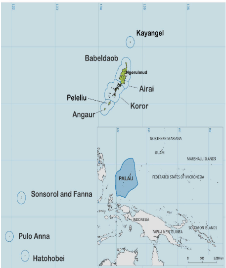
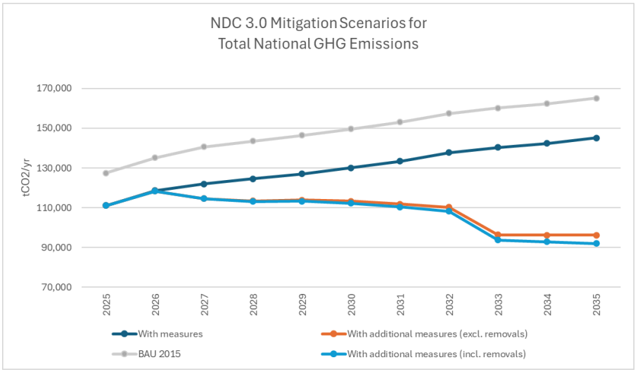
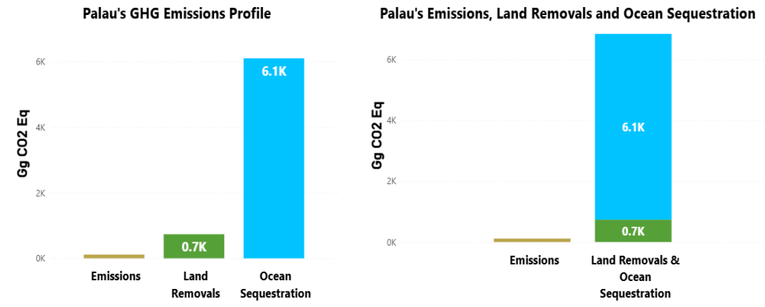
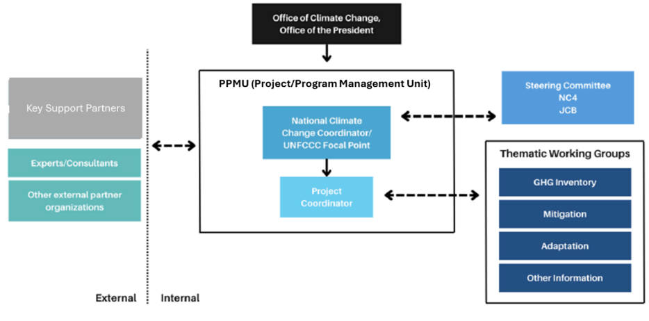
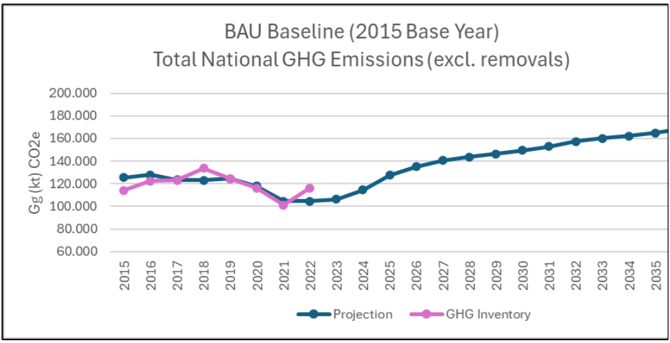
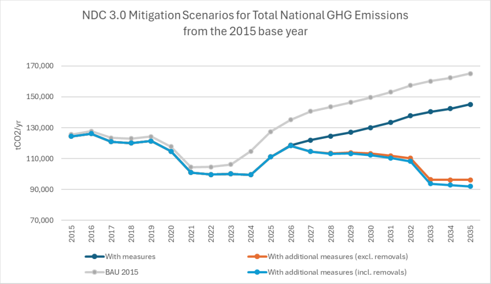

2025-2035
As the impacts of climate change intensify, Palau is increasingly experiencing the devastating effects. Rising sea levels, the loss of biodiversity, and more frequent extreme weather events threaten the health of our pristine island home and the well-being of our communities. Through the targets set and the submission of our Third Nationally Determined Contribution (NDC 3.0), we reaffirm our unwavering commitment to addressing climate change and its impacts, and our resolute determination to build a resilient and prosperous future.
While Palau accounts for 0.0002% of the global greenhouse gas emissions, we maintain a net negative emissions profile as a result of our extensive forests and mangroves, which serve as vital carbon sinks. Nevertheless, we remain dedicated to reducing global emissions through ambitious and urgent climate action, guided by our shared responsibility, unique circumstances, and dependent on the essential support needed to achieve our climate goals.
Our NDC 3.0 sets an ambitious and realistic target for a reduction of 73.0 ktCO2e/yr of emissions by 2035 under the 'with additional measure scenario' and with additional removals, and this represents a reduction of 44% from the estimated business-as-usual levels. Our NDC considers both targets for 'with measures' and 'with additional measures' scenarios and represents slightly greater mitigation than Palau's NDC 1.0 while including more sectors. This will be achieved through comprehensive mitigation efforts across various sectors, including increasing renewable energy generation, starting integration of electric vehicles in the transport sector, and improving energy efficiency nationwide. Additionally, we aim to reduce emissions in the waste sector by upgrading existing systems, expanding wastewater management capacity, and optimizing our solid waste management processes. We also endeavor to maintain steady growth of our carbon sinks through reforestation initiatives, which we anticipate will deliver important co-benefits.
As an island nation, adapting to the already felt effects of climate change is essential for our survival. Currently, Palau is developing a National Adaptation Plan that will focus on crucial economic, social, and environmental sectors. This plan aims to strengthen our present and future ability to cope with these climate impacts effectively. There is a need to develop means of assessing and addressing losses caused by these effects. Additionally, the ocean is deeply woven into our culture and provides a critical flow of livelihood that sustains our people. Maintaining a sustainable marine ecosystem is vital in preserving both the cultural heritage and economic well-being of our communities.
By the submission of this NDC 3.0, we demonstrate our steadfast commitment to the Paris Agreement and to implementing effective climate solutions at both the national and global levels. Achieving our NDC 3.0 requires national effort through institutional strengthening and governance complemented by adequate, sustainable, and consistent international support.
I extend my deep gratitude to ADB's technical assistance, through which the development of Palau's NDC 3.0 was made possible. I also express my sincere appreciation to our regional and international partners, consultants, and collaborators for their continued and unwavering contribution and support. Your expertise and strong commitment to collaboration have been invaluable. Equally, I appreciate the collective effort of the public and prlvate sectors - particularly stakeholders In the energy, transport, NDC. Together, we move forward with determination to continue working towards building a sustainable, low-carbon,andresilientfuture.
Sincerely,
SurangelS.whipps,Jr President Republic of Palau
| AIFFP | Australian Infrastructure Financing Facility for the Pacific |
| BAU | Business-as-Usual |
| BESS | Battery energy storage system |
| BPP | Blue Prosperity Plan |
| BTR | Biennial transparency report |
| CDM | Clean Development Mechanism |
| COP | Conference of the Parties |
| DFLW | Division of Forest, Land, and Water Management |
| DRCEF | Disaster Resilient Clean Energy Financing |
| ESSP | Energy Efficiency Subsidy Program |
| ETF | Enhanced Transparency Framework |
| GDP | Gross Domestic Product |
| GEDSI | Gender Equality, Disability, and Social Inclusion |
| GHG | Greenhouse Gases |
| GWP | global warming potential |
| HFC | Hydrochlorofluorocarbon |
| HFC | Hydrofluorocarbon |
| HFO | Hydrofluoroolefin |
| ICE | Internal Combustion Engine |
| ICTU | Information to facilitate Clarity, Transparency, and Understanding |
| IPCC | Intergovernmental Panel on Climate Change |
| IRENA | International Renewable Energy Agency |
| JCB | Joint Coordinating Body |
| JCM | Japanese Joint Crediting Mechanism |
| ktCO 2 e | Kilotons carbon dioxide equivalents (metric) |
| LT-LEDS | Long-Term - Low Emissions Development Strategy |
| MAFE | Ministry of Agriculture, Fisheries, and the Environment |
| MBR | Membrane Bioreactor |
| MPAs | Marine Protected Areas |
| MPII | Ministry of Public Infrastructure and Industries |
| MSW | Municipal solid waste |
| NAP | National Adaptation Plan |
| NC4 | National Climate Change Coordinating Committee |
| NDBP | National Development Bank of Palau |
| NDC | Nationally Determined Contribution |
| NDC 1.0 | (Intended) Nationally Determined Contribution issued in 2015 |
| NISS | National Invasive Species Strategy |
| NMT | Non-motorized transport |
| OBM | outboard motors |
| OCC | Office of Climate Change |
| PAN | Protected Areas Network |
| PCCP | Palau Climate Change Policy |
| PEWA | Palau Energy and Water Administration |
| PNMS | Palau National Marine Sanctuary |
| PPUC | Palau Public Utilities Corporation |
| PV | photovoltaic |
| RAC | refrigeration and air conditioning |
| RoP | Republic of Palau |
| SBR | Sequencing Batch Reactor |
| SDGs | Sustainable Development Goals |
| SIDS | Small Island Developing State |
| SFM | Sustainable Forest Management |
| TNC | Third National Communication |
| UBPP | Unlocking Blue Pacific Prosperity |
| UNFCCC | United Nations Framework Convention on Climate Change |
| WASP | Wind assisted ship propulsion |
| WW | Wastewater |
| WWTP | Wastewater Treatment Plant |
The Republic of Palau (RoP) recognizes that major emitters must deliver new commitments that keep us firmly on a pathway to limit warming to 1.5 0 C and for particularly vulnerable countries to keep pace with combating climate change, while pursuing decarbonization efforts to meet energy transition goals. As a Pacific Island Country, and Small Island Developing State, Palau acknowledges its critical need for a low-carbon and climate-resilient economy by fostering a just transition, access to capacity building, technology transfer, finance, and the importance of addressing loss and damage. Palau has a very minor contribution to global greenhouse gas (GHG) emissions of 0.0002% without including removals in 2022 (the year with latest GHG inventory information), and when including removals, has a net-negative status.
Committed to the Paris Agreement, the RoP submits its third Nationally Determined Contribution (NDC 3.0) to the United Nations Framework Convention before the thirtieth session of the Conference of the Parties. This submission complies with Article 4 of the Paris Agreement and relevant decisions, considers the enhanced transparency framework requirements, and accounts for national circumstances.
Recognizing the national circumstances, just transition and continued need for support to achieve a low carbon transition, Palau expects that removals from existing forests will continue to far exceed GHG emission past 2035. Under this NDC 3.0, Palau is committed to reducing GHG emissions by 2035 without additional removals by 20.0 ktCO2e/yr under the 'with measures scenario' that includes actions such as new rooftop solar systems, energy efficiency in water and sewer systems, non-motorized transport, and composting at the M-Dock landfill, amongst other measures. Under the 'with additional measures scenario' further actions focus on increasing solar power from independent producers, energy efficiency in appliances, an electric public bus system, and biofiltration of landfill gas, amongst other measures. These with additional measures will reduce 73.0 ktCO2e/yr by 2035 when including additional removals from forestry, and this represents a reduction of 44% from the estimated business-as-usual levels. 1 This commitment represents slightly greater mitigation than Palau's NDC 1.0 while including more sectors. For the absence of doubt, the reduced GHG emissions determined in the with measures scenario are included in the with additional measures scenario. All scenarios consider a Business-as-Usual (BAU) baseline where 2015 GHG emissions are the base year for projecting GHG emissions to 2035.
The RoP recognizes the need for its people and environment to adapt to climate change across the 16 states. Although the National Adaptation Plan is in preparation and expected by 2027, Palau has identified 10 core areas for adaptation that follow the guidance of the Palau Climate Change Policy. These include amongst others, sustainable agriculture and fishing, health, biodiversity and natural resources, critical infrastructure… etc. While noting that extreme weather events, intensified by climate change, already cause significant loss and damage, Palau's geography and remoteness amplify the impacts on economy, livelihoods, and infrastructure despite mitigation and adaptation efforts.
Stakeholder engagement is a cultural part of Palau's society and a central element in the practice of addressing climate change and sustainable development in the country. Government ministries, state-owned enterprises, private sector, civil-society groups, non-governmental organizations, as well as development partners have been included in the process for developing and validating this NDC 3.0. 2 Stakeholder engagement will also be deeply integrated into the implementation phase of climate actions from the concept stage to implementation, including when addressing environmental and social impacts, for approvals and licensing where required. Noting that internationally provided support often requires similar processes for stakeholder engagement and inclusion.
Since the submission of the Nationally Determined Contribution 1.0 in 2015, it is clear that the national climate action progress in Palau has been largely suppressed due to limited international support of finance, capacity building, and technological resources. As a SIDS, Palau needs this extensive support to progress further in a transformative way in the areas of transparency, mitigation, adaptation, loss and damage, and just transition. The RoP works tirelessly within its means to coordinate with ministries and partners to identify and structure support needs, though current outcomes are constrained to a few high-priority areas, and the government requires further efforts to address the broader climate actions and support needs across sectors to ensure nationwide transformation.
The Republic of Palau (RoP) affirms that major emitters must deliver strengthened commitments to keep the world firmly on track to limit warming to 1.5 0 C. For particularly vulnerable countries, this is essential in keeping the severity of climate impacts at bay, while advancing decarbonization and achieving green transition objectives. As a Pacific Island Country and a Small Island Developing State, Palau underscores its urgent need for a low-carbon and climate-resilient economy, supported by equitable access to capacity building, technology transfer, climate finance, just transition, and measures to address loss and damage. In 2022, Palau accounted for a mere 0.0002% of global greenhouse gas emissions when not factoring in removals. When removals are included, RoP achieves a net-negative emissions status.
To combat the common global threat of climate change and to protect the people of Palau as well as natural and built environments, the RoP is committed to the Paris Agreement and values its current provisions and decisions. In this context, the RoP submits this third Nationally Determined Contribution (NDC 3.0) to the secretariat of the United Nations Framework Convention on Climate Change (UNFCCC) before the thirtieth session of the Conference of the Parties. This NDC 3.0 is submitted in accordance with Article 4 obligations under the Paris Agreement (1/CP.21), following various decisions, including guidance related to mitigation (4/CMA.1), while taking into consideration the transparency framework (18/CMA.1) as well as national circumstances and considerations.
The Republic of Palau is a country made up of 16 states and more than 340 islands, of which 12 are inhabited, each hosting their own unique environmental landscapes and biodiversity. It has a total land area of approximately 459 km 2 . The nation is geographically located approximately 805 km (500 mi) southeast of the Philippines, 1,308 km (813 mi) from Guam, 724 km (450 mi) from Indonesia and Papua New Guinea, and 4,023 km (2,500 mi) from Japan, forming the westernmost part of the Caroline Islands chain. Palau's ecosystem varies from coral reefs, mangrove forests, tropical rainforests, and limestone islands, with an abundance of endemic species and marine life. The Palauan people are also deeply connected to the land and sea, relying on Palau's biodiversity for sustenance, tourism, shelter, and cultural practices. 3
Palau has a population of approximately 17,524 people living in 6,915 households, with total annual national household expenditures of US$ 227,000,000 or an average of US$ 32,800 per household in 2024. Notable household expenditures are for food (21%), transport including fuel consumption (6%), and

household energy (4%). 4 Tourism is the major economic driver for Palau with 56,200 to 93,700 international visitor arrivals annually between 2019 and 2024, who stay on average 5.8 nights and contribute an estimated US$ 87,000,000 directly to the country's economy. 5 This direct contribution is approximately 30% of current price gross domestic product (GDP) in 2024. 6
Measurable progress has been made on the planning and policy side for the transformational change needed to reduce GHG emissions in Palau. This progress includes the first nationally determined contribution (NDC 1.0) issued in 2015, the draft updated Palau Climate Change Policy 2025 - 2035 (PCCP), Palau National Infrastructure Investment Plan 2021-2030 (NIIP), and Palau Development Plan 2023 - 2026, along with various sectoral and ministerial plans that include climate actions across the government. 7 8 9 10
The NDC 1.0 focused on mitigation of GHG emissions in the energy sector, with a specific focus on renewable energy electricity generation and energy efficiency from demand side electricity use, transport, and waste, while the PCCP emphasizes additional measures that include managing carbon sinks and starting initial efforts to address mitigating GHG emissions in agriculture and further actions in transport. The PCCP consolidates the previously mentioned policy and planning, along with this NDC 3.0, re-emphasizing managing sinks and the mitigation of GHG emissions through renewable energy and energy efficiency in the electricity sector, while including land and maritime transport and waste sector mitigation actions. In addition, the PCCP highlights the broad areas of support needs, addressing the needs for capacity building, technical assistance, technology transfer, and finance in order to achieve the interventions envisioned in the PCCP and this NDC 3.0.
Palau's latest update for the national GHG inventory estimates that direct GHG emissions were 113.41 ktCO2e (excluding removals) in 2022, and with removals of -734.1 ktCO2. Of the direct GHG emissions, 55.4 ktCO2e come from Energy Industries, 45.9 ktCO2e from Transport (land, domestic maritime, and aviation), 0.30 ktCO2e from Industrial Processes and Product Use (refrigeration and air conditioning), 0.24 ktCO2e from Agriculture (manure management), and 6.3 ktCO2e from Waste (solid waste disposal, biological treatment of solid waste, and wastewater treatment and discharge). 11
Progress to reduce GHG emissions and account for these has been slow in Palau due to limited national capacity, financing, as well as available technologies and practices. However, within its own capacities and with some valued international support, Palau has made progress. Most notably are Palau's management of forests, which has ensured the removal of -734.1 ktCO2 in 2022, which is 6.5 times greater than the country's direct GHG emissions. This is a 'net-negative' balance in Palau and will likely remain in the foreseeable future. In addition to sinks, Palau has made progress in reducing GHG emissions, and by 2025 is estimated to have reduced 13.2 ktCO2/yr from electricity generation through the installation of solar power generation capacity, 2.1 ktCO2/yr through energy efficiency measures, 0.8 ktCO2/yr in land transport and 0.3 ktCO2/yr in maritime transport. 12 Though additional mitigation may have occurred during this period, current monitoring, reporting, and verification practices do not allow for capturing all the information needed to account for any additions.
Previous NDCs from other countries commonly use conditional and unconditional targets to describe a country's ability to achieve commitments. However, these terms don't accurately reflect the circumstance of Palau. For instance, the term unconditional implies that there is national capacity to achieve targets without outside support. This is simply not the case for Palau, given its limited human and resource capacity, which limits its ability to absorb additional commitments. Therefore, reliance on international cooperation is the primary vehicle to achieve Palau's NDC targets. To more accurately represent the Republic's transition pathways and implementation context, the following terminologies are used in place of conditional and unconditional :
Under this NDC 3.0, the RoP utilizes 2015 as the base year for the projection of the Business-as-Usual (BAU) national GHG emissions (excluding removals) to target reference year of 2035. 2015 is a year with higher integrity information compared to previous years. 13 The BAU projection uses annual growth based on actual and projected national GDP growth for the energy (including transport), agriculture, waste, and IPPU (HFCs imports) sectors. 14 The BAU for forestry removals uses the same growth as in the latest GHG inventory.
In 2025, the RoP and national stakeholders undertook a bottom-up approach for each sector, included in this NDC 3.0, with the support of the Asian Development Bank to define specific current and future technically implementable and financeable mitigation actions between 2025 and 2035. Including defining past progress in mitigating GHG emissions starting from 2015. The expected GHG emission reductions of each action are estimated based on internationally accepted methodologies and national circumstances. These results allowed for the estimation of NDC 3.0 commitments under the emissions scenarios that are applicable to the enhanced transparency framework (ETF) progress reporting and guidance (i.e. 'without measures', 'with measures' and 'with additional measures'); noting that the GHG mitigation values presented in this NDC 3.0 for with additional measures also includes the values from the with measures scenario.
Under this NDC 3.0, Palau is committed to reducing GHG emissions by 2035 without additional removals by 20.0 ktCO2e/yr under the 'with measures scenario'. Under the 'with additional measures scenario' Palau will reduce GHG emissions by 73.0 ktCO2e/yr by 2035 when including additional removals from forestry, and this represents a reduction of 44% from the estimated business-as-usual levels. 15 This commitment represents slightly greater mitigation than Palau's NDC 1.0 while including more sectors. For the absence of doubt, the reduced GHG emissions determined in the with measures scenario are included in the with additional measures scenario. More detail of the results of the scenarios are as shown in Figure 2 and Table 1.
A summary about each applicable sector is also provided in the following sub-sections, with additional information also found in Annex A (Information to facilitate Clarity, Transparency, and Understanding (ICTU) table), Annex B (list of mitigation actions), and Annex C (key assumptions).

| Reference, Baseline and Mitigation | Unit | 2025 | 2030 | NDC3. 0 Target 2035 | NDC1.0 Target 16 2025 |
|---|---|---|---|---|---|
| Without Measures (excl. removals*) | |||||
| BAU (2015 base year) 17 | ktCO 2 e/yr | 127.4 | 149.6 | 165.0 | 140.0 |
| With Measures Scenario (excl. additional removals**) | |||||
| Reduced GHG emissions | ktCO 2 e/yr | -16.4 | -19.5 | -20.0 | |
| Expected GHG emissions level | ktCO 2 e/yr | 111.0 | 130.1 | 145.1 | |
| Potential change from BAU (2015 base year) | % | -13% | -13% | -12% | |
| With Additional Measures (excl. additional removals**) | |||||
| Reduced GHG emissions | ktCO 2 e/yr | -16.4 | -36.3 | -68.9 | |
| Expected GHG emissions level | ktCO 2 e/yr | 111.0 | 113.2 | 96.2 | |
| Potential change from BAU (2015 base year) | % | -13% | -24% | -42% | |
| With Additional Measures (mitigation incl. additional removals***) | |||||
| Reduced GHG emissions | ktCO 2 e/yr | -16.4 | -37.3 | -73.0 | -72.0 |
| Expected GHG emissions level | ktCO 2 e/yr | 111.0 | 112.2 | 92.0 | 68.0 |
| Potential change from BAU (2015 base year) | % | -13% | -24% | -44% | |
The RoP has set an ambitious target of achieving 100% renewable electricity by 2050, as laid out in the Renewable Energy Roadmap 2022-2050. 18 Concerning power generation and related renewable energy, the institutional responsibility is distributed among key national stakeholders, including the Ministry of Public Infrastructure and Industries (MPII), Palau Energy and Water Administration (PEWA), and Palau Public Utilities Corporation (PPUC), which together oversee energy planning, regulation, implementation, and grid operations. PPUC plays a central role by owning and operating the grid-connected energy infrastructure, while also participating in planning and modernization projects.
Palau's renewable energy sector has recently started a transformation through major infrastructure projects integrating solar and battery energy storage systems (BESS) into its grid. Key initiatives include the Babeldaob Solar photovoltaic (PV) + BESS project (2023), a 15.3 MWp solar power plant with 12.9 MWh storage. 19 The Babeldaob Solar PV plant is currently (in early 2025) only delivering part of its potential due to curtailment caused by the unavailability of the grid to take on more renewable electricity. To address this, the new Palau Renewable Energy Integration Project (2025) focuses on some of the needed grid upgrades to reduce existing solar curtailment and improve current renewable energy reliability. 20 Several other projects have also installed rooftop solar systems at households and commercial businesses, equaling an estimated capacity of 6 MWp. 21 Additionally, decentralized solar-storage microgrids installed in agricultural and aquaculture sites in 2025 are enhancing rural energy resilience and reducing diesel reliance. 22 However, detailed information on these microgrids is not available or cannot be verified currently. Together, these projects represent a significant step towards Palau's low-carbon development, but much more is needed to reduce further GHG emissions from the sector.
Palau's renewable energy transition in power generation is grounded in firm national commitments and robust international partnerships. Limited finance, land, grid development, and technical capacity present challenges in furthering the country's low-carbon transition in electricity generation. The coordinated actions of national stakeholders, backed by regional and global partners for technical assistance, capacity building, and finance, continue to support Palau's vision of a clean, secure, and renewable energy future.
Palau has a well-documented potential for renewable energy electricity generation from solar sources and the RoP has plans to increase renewable energy electricity generation. This planned increase in capacity requires significant capacity building, finance, technology transfer, and support to reach the planned goals. This support includes, but it is not limited to, a full demand-side and economic assessment of electricity needs and use, review of regulation and policies, new solar generation capacity, enhanced grid and generation communications and control systems, additional BESS, and capacity building at PPUC and private sector entities. As part of the development of this NDC 3.0, it is estimated that an additional 1.5 MWp of solar systems are programed and financed to be completed by the end of 2030. An extra 16.7 MWp that is planned may be implemented by the end of 2035 with additional support, and this will also require significant capacity and control enhancements for the grid and BESS. When supported and fully implemented, these planned actions are expected to mitigate 14.4 ktCO2/yr in 2035 (under the with measures scenarios) and up to 37.0 ktCO2/yr in 2035 (under the with additional measures scenario). More information on the mitigation actions can be found in Annex B.
As previously indicated, Palau remains highly dependent on diesel imports, which contributes to an estimated 81% of grid-connected power generation in 2024 and thereby leads to higher GHG emissions and a higher cost of power generation on the grid. 23 The RoP has been aware of the significance of energy efficiency in reducing electricity consumption and petroleum imports since at least 2007, when the Palau Energy Conservation Strategy and Energy Efficient Action Plan were finalized for addressing RoP offices and buildings. 24 During the period of 2007 to 2024, GHG emissions from grid-connected power generation have fallen by nearly 20%, which is likely due to a combination of slightly reduced population, inclusion of renewable power generation, energy efficiency measures, and commercial users with their own power generation. 25 Despite these efforts electricity rates were US$ 0.33 - US$ 0.45/kWh by late 2024, and average household consumption is estimated to be 550 kWh per month. 26 27
It is noted that some commercially available washing machines, dryers, freezers, and refrigerators do have US Energy Star or Canadian EnerGuide labeling. Still, the labeling is not extensive because commercially available models do not all originate from the US or Canada. 28 Although these energy-efficient appliances are available in Palau, they have a low penetration rate due to higher costs. 29 In addition, since 2008, the National Development Bank of Palau (NDBP) and the Palau Housing Authority have been collaborating to deliver the Energy Efficiency Subsidy Program (EESP) for the construction of new energy-efficient residential houses.
PPUC and development partners undertook an assessment of the transmission and distribution network and prepared a master plan for development to 2030. 30 Upgrades to the PPUC grid will be undertaken in 2025 and running through 2026, which are expected to lead to operational energy efficiency improvement and a higher capacity to accept renewable energy onto the grid. 31 At the same time, PPUC is working with development partners to improve the water and wastewater systems, which will lead to energy efficiency improvements. 32 33
Palau's plan for improved energy efficiency requires significant capacity building, finance, as well as technology transfer and assistance to support reaching the planned goals. As a part of the NDC 3.0, these include: energy efficiency in power generation, reduced losses through grid enhancements, increased efficiency in water and wastewater pumping and reduced system losses, and higher penetration of efficient air conditioning and refrigerator units. When supported and fully implemented, these planned actions are expected to mitigate 2.3 ktCO2/yr in 2035 (under the with measures scenario) and up to 10.2 ktCO2/yr in 2035 (under the with additional measures scenario). More information on the mitigation actions can be found in Annex B.
Palau has an approximate network of 85 mi (137 km) of highways and approximately 35 mi (56 km) of unsealed roads maintained by the Public Works Bureau. 34 In 2020, Palau had approximately 3,300 registered vehicles 35 and imported approximately 1,000 vehicles in 2018, 90% of which are passenger cars and the rest are heavy equipment, lorries/trucks, buses, and motorcycles. Apart from a few electric vehicles (EVs) all vehicles use Internal Combustion Engine (ICE) technology, where 96% of passenger cars use gasoline and 4% diesel. What is notable is that 94% of all vehicles entering the country are used and there are no specific restrictions in place regarding age limits or fuel economy standards. 36 There is currently no systematic inclusion of EVs in Palau, though pilot efforts have started, and there is also no system currently in place to address large battery maintenance and end-of-life safe disposal. 37 There is one small pilot for affordable public bus transport in the Koror area 38 and planning for a small EV bus pilot 39 , along with a small fleet of school buses and commercial buses. There is a need for a comprehensive mobility and transport economy study to help determine an optimal decarbonization transition in land transport to help reach Palau's longer-term vision of achieving net-zero emissions.
Palau's planned actions for greener land transport require significant capacity building, finance, as well as technology transfer and assistance support. As a part of this NDC 3.0, these actions include: enhancing the fuel economy of vehicles, institution of EVs in the government fleet, implementing an EV based public bus system, and furthering non-motorized transport. When supported and fully implemented, these planned actions are expected to mitigate 2.2 ktCO2/yr in 2035 (under the with measures scenario) and up to 8.4 ktCO2/yr in 2035 (under the with additional measures scenario). More information on the mitigation actions can be found in Annex B.
Domestic maritime transport (i.e. domestic water-borne navigation) is serviced by two international ports in Palau, 28 local docks, and two anchorages. The Port of Malakal is the main port of Palau and is situated on Malakal island, adjacent to Koror Island. 40 In Palau there are approximately 350 registered small craft of up to 45 ft (14m) and the vast majority use outboard motors (OBMs) of various sizes with roughly 550 OBMs in service. 41 The country imports approximately 180 OBMs on average each year and only a few are electric. 42 There are 15 registered domestic vessels in Palau, ranging from 19 to 592 gross registered tons or 18m to 54m in length, as well as three foreign registered vessels that periodically operate in Palauan waters. 43
There are currently two planned actions to reduce GHG emissions in maritime transport and these require significant capacity building, finance, and technology transfer as well as assistance support. These actions include switching from 2-stroke to 4-stroke OBMs to improve fuel economy and to commission and operate two wind-assisted ship propulsion for inter-island transport. When supported and fully implemented, these planned actions are expected to mitigate 0.4 ktCO2/yr in 2035 (under the with measures scenario) and up to 1.8 ktCO2/yr in 2035 (under the with additional measures scenario). More information on the mitigation actions can be found in Annex B.
Palau's solid waste management sector is relatively well developed and enables the safe disposal of residual waste, recovery of organic materials, and some small-scale recycling in-country. However, there are some material streams that remain challenging to manage in the context of a small and remote economy. A specific area for further development is hazardous materials, including electronic waste and chemicals/items that require export for safe management and disposal.
Green waste/vegetation, some food scraps, and some shredded papers are processed in a tunnel composting facility in Koror. This facility processes an estimated 350 tons per annum. 44 Compost products are sold locally. There is equipment to shred vegetation at the National Landfill in Ameliik (for use as landfill cover) but this has not been actively used at the site to date.
Residual waste materials (not currently recycled or composted) are placed in the National Landfill in Ameliik. This facility is a semi-aerobic 45 design intended to facilitate accelerated breakdown and stabilization of waste through allowing airflow through the waste material. This means that the landfill gas has a lower concentration of methane when compared to a fully anaerobic managed landfill. Landfill gas is collected through a collection system and vented into the atmosphere.
Overall, the solid waste management sector is well developed and has the infrastructure required to deliver further emission reduction, safe disposal, and recovery of valuable materials. However, there is significant potential to better utilize the available infrastructure to improve recycling and recovery, and to divert materials from landfills to reduce emissions.
Proposed mitigation actions in solid waste management operations that require no or only limited support are expected to reduce emissions by 0.7 ktCO2e/yr in 2035 (under the with measures scenario). Mitigation actions that require support for expanded composting operations, landfill operational improvements (working cover), landfill gas treatment, and a new transfer station in Koror, are estimated to reduce solid waste emissions by 4.3 ktCO2e/yr in 2035 (under the with additional measures scenario). More information on the mitigation actions can be found in Annex B.
Current sanitation arrangements in Palau are a mix of centralized systems (Koror and Melekeok) and onsite systems. In Koror significant upgrades are nearing completion with a Sequencing Batch Reactor (SBR) treatment system in place and extensive network upgrades to provide capacity for future urban growth. 46 Septage from onsite wastewater treatment systems is transported in tankers to the Koror treatment plant and currently discharged to the decommissioned ponds system. 47
In Melekeok, the Membrane Bioreactor (MBR) treatment system is at capacity with some equipment no longer operational. Sludge (not dewatered due to equipment failure) is currently irrigated onto nearby land. The system places limits on additional development in the plant catchment with recent hotel developments required to put in place pre-treatment to avoid overloading the plant. 48
For sanitation, the priorities of the sector are to upgrade and expand the existing reticulation network in Koror (currently in process of implementing and complete upgrades to the two centralized systems in Koror/Malakal (currently in process of implementing) and Melekeok (not currently funded). Management of sludge at the Koror site is also a priority with current disposal arrangements no longer available once the ponds are fully decommissioned.
Proposed mitigation actions include expanded wastewater system optimization (being delivered under the current upgrade program in Koror but not currently funded for Melekeok) as well as enhanced sludge removal, management, and upgrades to the Melekeok treatment plant. Proposed mitigation actions in solid waste management operations that require no or only limited support are expected to reduce wastewater emissions by 0.18 ktCO2e/yr in 2035 (under the with measures scenario). Combined with additional measures that require more support, reduced wastewater emissions are estimated to be 0.20 ktCO2e/yr in 2035 (under the with additional measures scenario). More information on the mitigation actions can be found in Annex B.
Agricultural activities in Palau are regulated by the Ministry of Agriculture, Fisheries, and the Environment (MAFE), which focuses on sustainable food production and wise stewardship of the nation's marine and terrestrial resources, with the goal of enhancing the well-being and economic livelihoods of the people in Palau. The Bureau of Agriculture's mission is to promote, develop, protect, and conserve Palau's land-based natural resources and to assist families to have the skills, resources, and opportunities to ensure sustained food production, nutrition, food security, as well as wise stewardship of ecosystems. Under the Bureau of Agriculture are the Divisions for Horticulture and Livestock. 49
According to Palau's draft Third National Communication (TNC), GHG emissions from the sector (0.26 ktCO2e) are estimated to constitute only 0.23% of total national emissions. 50 The majority of emissions in the sector come from livestock activities and particularly from pig manure management. Between 2021 and 2024, an estimated 317 to 544 pigs were raised for agricultural purposes in Palau, where approximately 30% are raised in small herds of 1 to 4 pigs per household. The remaining estimated 200 to 450 pigs were raised at approximately 19 farms. 51
There is one proposed mitigation action for agriculture that focuses on introducing biogas and internal use at pig farms. This action is expected to reduce methane emissions related to manure management by an estimated 0.16 ktCO2e/yr in 2035 (under the with additional measures scenario). More information on the mitigation action can be found in Annex B.
Palau ratified the Montreal Protocol in 2001 and the Kigali Amendment in August 2017, reinforcing its commitment to climate action and aligning with its broader environmental goals. As a Group II Party under the amendment, Palau is expected to peak HFC consumption by 2024 and gradually phase it down through a structured schedule extending to 2045. 52
To meet the requirements of the Kigali Amendment, Palau has undertaken several measures, including amending regulations, training, conducting public awareness campaigns, improving monitoring of HFCs, establishing a HFC licensing and quota system, and banning hydrochlorofluorocarbon (HFC) based equipment. 53 54 55 56 57 58
Other efforts to phase down HFCs include participation in regional programs to test and promote low-global warming potential (GWP) alternatives. The country has also initiated pilot projects for the introduction of climate-friendly refrigeration and air conditioning (RAC) technologies, including equipment using natural refrigerants. Palau has also been working on updating RAC sector safety and competency standards to enable their safe adoption. 59
Under its NDC 3.0, Palau plans to continue reducing HFC emissions by switching imports to lower-GWP HFC gases and attempting to enhance the use of hydrofluoroolefin (HFO) gases. When supported and fully implemented, this planned action is expected to mitigate up to 7.0 ktCO2e/yr in 2035 (under the with additional measures scenario). More information on this mitigation action can be found in Annex B.
Palau has a land area of approximately 459 km², which retains between 75-87% forest cover. These forests span across areas of mangrove, limestone, swamp, and volcanic ecosystems 60 , and are among the richest in terms of biodiversity in Micronesia, hosting over 972 native plant species including at least 178 endemics-as well as numerous endemic birds, reptiles, and bats. 61 Palau's forests also play a vital role in regulating the climate, protecting water resources, and sustaining biodiversity.
Forest ownership is decentralized with lands held by individuals, clans, or states. Oversight has transitioned to MAFE, specifically through the Division of Forest, Land, and Water Management (DFLW). 62 Recognizing the ecological and cultural significance of its forests, Palau adopted its Sustainable Forest Management (SFM) Policy in 2018, aiming for 'healthy forests that sustain culture and livelihoods, expand the economy, and strengthen ecosystem resilience'. 63 The policy aligns with national frameworks such as the Master Development Plan (1996/2020), Medium-Term Development Strategy, and the PCCP. The National Environmental Management Strategy (2022-2030) further identifies forests as key land resources essential for biodiversity, water quality, and climate resilience. To sustain these efforts, the country requires continued capacity building, improved data systems, and stronger financial mechanisms for forest stewardship. 64
Palau's forests act as a net carbon sink, with the draft TNC indicating that the total annual carbon removals from forest areas are estimated to be -734.1 ktCO2. 65 With mangrove forests covering 52km 2 and the terrestrial and plantation forests covering 364 km 2 . 66
There is one proposed action to increase sinks through afforestation of up to 500 ha of degraded land by 2040, with 250 ha planted by 2035, while also looking into the potential to increase removals from additional mangrove areas. This action is expected to increase forest sinks by an estimated 4.1 ktCO2/yr in 2035 (under the with additional measures scenario). More information on this mitigation action can be found in Annex B.
Palau is currently engaged in Article 6 activities under the Paris Agreement through voluntary cooperative approaches (Article 6.2). This engagement is facilitated by a bilateral agreement established in 2014 between Palau and Japan under the Japanese Joint Crediting Mechanism (JCM). As of 2025 Palau has four registered JCM projects that address mitigation from rooftop solar systems. 67 Palau reaffirms its commitment to the further implementation of Article 6.2 mechanisms and possible cooperation in the crediting mechanism (6.4) and non-market approaches (6.8). The country accounts for mitigation from the registered JCM projects in this NDC (e.g., avoiding double counting), but does need support to address initiatives to enhance national expertise in carbon market mechanisms and technology to improve monitoring, reporting, and verification processes along with international reporting
With many villages located on the coast, Palau is at risk of experiencing the effects of sea level rise, causing the displacement of communities, saltwater intrusion inhibiting agricultural practices. Storms already threaten infrastructure and warming oceans put coral reefs and marine life at risk, impacting tourism appeal and reducing fishing yields. Moreover, Palau experiences sea level rise up to three times the rate of the global average. As a result, and as part of an ongoing commitment to conserve habitats and ways of life, Palau has established numerous protected areas, not only for environmental conservation but also for the conservation of cultural practices and social way of life. Leveraging leading research at the local and international level, indigenous knowledge, equity, gender equality, and stakeholder expertise remain key. Adaptation and disaster risk reduction actions to mitigate the worst impacts to the people of Palau and environment remain the highest priority. Primary risks amongst others include: average air temperature increase, heat stress, average and extreme rainfall frequency, drought frequency and intensity, tropical cyclone intensity, sea level rise, tidal flood frequency, ocean water temperature, and ocean acidification. 68
The following subsections briefly outline the different interventions and actions that Palau is planning to implement under the PCCP; interventions and actions that will require additional support for implementation outside of domestic resources. Palau has started the process of preparing its National Adaptation Plan (NAP), which is expected to be completed in 2027 and will build upon the PCCP with a more detailed planning and implementation framework and indications of support needs.
Palau has a proactive agenda for ensuring sustainable agriculture and fishing as part of the PCCP. The focus lays on strengthening food security in agriculture and aquaculture by implementing national policies and institutional frameworks that support resilient practices. The government plans to launch comprehensive outreach programs to raise awareness among farmers, provide them with technical support and incentives, and deliver training on best practices, such as increasing taro yields and managing the effects of ocean temperature changes on clam farms. Research and science-based innovation will be promoted to enhance agricultural and aquaculture production, while seeking financial incentives and grants to help farmers improve their infrastructure and practices. The policy aims for a 50% increase in land used for taro production and improvements in sustainable farm production. In the fisheries sector, Palau will build resilience to temperature change and ocean acidification by protecting coral and mangrove sites. Mangroves are vital as they serve as nursery grounds for a wide variety of marine species and are essential for maintaining natural fish diversity. Dedicated support and research teams will conduct site-specific studies, monitor climate impacts, and use findings to guide coral replanting and restoration in affected coastal areas. Palau intends to monitor these areas to ensure progress. Collectively, these interventions will drive sustainable food production, enhance ecosystem resilience, and secure livelihoods for Palau's communities. 69
Palau intends to ensure robust future actions to strengthen the health sector's resilience to climate change. The government will equip health centers in Babeldaob and Iouldaob with emergency medical equipment, ensure adequate staffing, and integrate these centers into the national emergency response systems. Community members are expected to receive training in basic emergency health services and communication protocols, enhancing local capacity to respond to climate-related emergencies. Health centers will undergo comprehensive assessments to identify and address equipment gaps and will be upgraded with independent power generation, such as solar panels, to maintain operations during disasters. The PCCP mandates regular updates of contact information for people with disabilities, ensuring targeted support during climate events. To combat water- and vector-borne diseases, authorities will combine communication and preventative health services through education campaigns, invest in preventative measures, leverage technology for improved disease prediction, and foster collaboration among ministries, non-government organizations, and community leaders. These actions will increase the number of trained health providers, improve health infrastructure, and reduce disease incidence, ensuring that Palau's health system remains resilient and responsive to the evolving challenges posed by climate change. 70
Palau's overarching goal is to proactively safeguard its biodiversity and natural resources through targeted interventions as outlined in the PCCP. The government will update the SFM Policy to incorporate climate stressors, ensuring the health and resilience of forests, mangroves, and wetlands. Authorities will conduct field surveys and collaborate with stakeholders to identify and map resilient ecosystems, then implement protection and conservation measures. The policy mandates integrating climate change considerations into Marine Protected Areas (MPAs) and the Protected Areas Network (PAN), using localized climate models to inform management plans and harmonize legal frameworks. Palau will leverage capacity building, financial resources, and public outreach to strengthen ecosystem resilience. Mangrove forests are critical hubs of biodiversity for a rich variety of terrestrial and marine species. They also offer several adaptation and mitigation benefits, from protecting coastlines against storm surges and rising seas to capturing carbon. Continued research is essential to better understand how these unique ecosystems are impacted by climate change, and how protecting them and sustainability managing them can lead to more effective adaptation and restoration strategies. To combat overfishing, the government will utilize the Palau National Marine Sanctuary and/or Blue Prosperity Plan (BPP), monitor pelagic fish populations, and sustainably manage fisheries to support ocean carbon storage. The policy also prioritizes updating and implementing the National Invasive Species Strategy (NISS), engaging stakeholders to address climate-related gaps and enhance biosafety and biosecurity legislation. Through these coordinated actions, Palau aims to build robust, climate-resilient ecosystems, protect biodiversity, and ensure the sustainable use of natural resources for future generations. 71
Palau intends to strengthen the resilience of vulnerable groups and safeguard cultural heritage through targeted climate actions. Authorities will identify and assess the needs of vulnerable populations including people with disabilities, youth, elderly, single parents, low-income households, and foreign nationals using the NAP and other adaptation efforts. The government will develop risk assessment maps, conduct needs assessments, and create tailored adaptation actions to address specific hazards and resilience gaps. To improve access to adaptation finance and technical support, Palau will develop concept notes and conduct awareness campaigns, ensuring vulnerable groups can benefit from climate funding and capacity-building programs. The policy prioritizes enhancing local food production by supporting family and community gardens, subsidizing renewable energy access, and providing training to boost climate resilience. Authorities will also establish relocation frameworks for at-risk communities, identify suitable relocation sites, and ensure inclusive engagement in planning. To preserve cultural heritage, Palau will integrate traditional wisdom, customs, and values into education systems and climate resilience programs, collaborating with stakeholders to transmit knowledge to younger generations. Through these coordinated actions, Palau aims to empower vulnerable groups, protect cultural identity, and build a more inclusive and resilient society in the face of climate change. 72
Palau has the goal to fortify its critical infrastructure against climate risks by integrating climate change and disaster risk management into national and state land use as well as marine spatial plans. Authorities will conduct comprehensive assessments of current zoning and planning policies, strengthen master plans, and ensure regular monitoring and updates. The government will prioritize site-specific risk assessments for private, commercial, and government infrastructure, developing management plans and securing funding for adaptation projects and programs. Vulnerable infrastructure will be identified, prioritized, and improved through targeted investments, with a focus on relocating critical facilities-such as the National Hospital and schools-from high-risk coastal areas and climate-proofing essential assets like causeways, roads, ports, and docks. Palau will adopt and implement a climate- and disaster-resilient energy-efficient building code, reinstating the National Energy Committee to review and update standards, and providing training for agencies to ensure compliance. Emergency response systems will be strengthened by assessing current capacity, upgrading institutional structures, and installing early warning systems and emergency assistance infrastructure. These coordinated actions will ensure that Palau's critical infrastructure remains resilient, adaptive, and capable of supporting communities in the face of increasing climate-related threats. 73
Palau expects to enhance the resilience and sustainability of its utility infrastructure through a series of forward-looking interventions. Authorities will conduct site-specific risk assessments for utility facilities, services, and infrastructure, developing robust management plans to reduce vulnerabilities and ensure continuity during climate related disruptions. The government will upgrade and, where necessary, relocate vulnerable utility assets, prioritizing those most exposed to climate risks. Energy audits will be implemented across all utility facilities to identify opportunities for improved efficiency and reduced GHG emissions, with recommendations guiding future upgrades. Water resource management will be modernized through comprehensive inventories, integrated planning and the construction of additional reservoirs, ensuring equitable access and climate resilience. Authorities will upgrade water systems and expand access to improved services, especially for vulnerable populations. Waste treatment facilities will be inventoried, assessed, and upgraded to withstand extreme weather with a focus on underserved areas. These coordinated actions will ensure that Palau's utilities are climate-resilient, environmentally responsible, and capable of supporting the nation's communities in the face of increasing climate-related challenges. 74
Economic resilience to climate change is critical to Palau's future, and Palau intends to establish a National Disaster Recovery Fund and an insurance program that incorporates climate considerations. Palau will develop clear frameworks for fund governance, secure financial resources, and ensure the fund is accessible for disaster recovery. The government will collaborate with insurance providers to design programs that address climate risks and adaptation needs. To enhance legal preparedness, Palau will assess and reform existing legislation to better support climate change and disaster response. The PCCP calls for institutionalizing domestic finance for climate priorities by developing dedicated budgets and annual budget calls at national and sub-national levels, ensuring consistent funding for climate actions. Palau will create a preliminary budget to showcase current climate investments and attract additional external funding. Authorities will also promote transparency in capital allocation, align national climate funding with domestic sources, and implement strategies to access international climate finance. By mapping community actions and developing robust finance management systems, Palau will track progress and optimize resource use. These coordinated actions will enable Palau to mobilize financial resources, strengthen economic development, and ensure that commerce and livelihoods remain resilient in the face of climate change.75
Palau expects to transform its education sector to build climate resilience and disaster preparedness for future generations. Authorities will integrate climate change and disaster management into education policies and action plans, revising school curricula to include climate topics across all grade levels. The government will develop and pilot new curriculum materials, train teachers, and source instructional resources such as books, apps, and lab equipment to support climate education. Palau will expand scholarship opportunities and professional training in climate and disaster management, establishing annual Teachers Education Conferences and a dedicated office at the Ministry of Education to coordinate, monitor, and evaluate climate-related activities. Community outreach programs will engage adults and youth in climate resilience, while efforts to improve access to information will ensure educational materials are available in all schools. Authorities will upgrade or relocate public school facilities to address climate risks, provide air conditioning, and identify safer sites for vulnerable schools. These actions will foster a knowledgeable, prepared, and resilient population, equipping both students and educators with the skills and resources needed to adapt to and mitigate the impacts of climate change. 76
The private sector, and especially tourism, provide for a major part of the financial security of Palau. As such, Palau intends to continue and enhance the active engagement of the private sector and tourism industry to both drive and support climate resilience and sustainable development. Authorities will establish a national platform for information sharing between public and private sectors, mapping stakeholders and fostering collaboration through advisory boards and public-private committees. The government will encourage private sector participation in climate change discussions, develop communication guidelines, and ensure diverse stakeholder engagement. Palau will support private businesses in accessing climate finance, conducting risk assessments, and implementing energy audits to promote energy efficiency and renewable energy transitions. The tourism sector will benefit from updated policy frameworks that allocate budgets for mitigation and adaptation projects, with the private sector contributing to funding and implementation. Authorities will promote sustainable tourism by enhancing the Palau Pledge, diversifying tourism products, and emphasizing climate resilience in marketing. The government will facilitate concessionary loans for tourism businesses, support the development of new attractions, and encourage international branding that highlights Palau's commitment to authentic, sustainable, and cultural experiences. Through these coordinated actions, Palau aims to build a climate-resilient economy, empower the private sector, and position its tourism industry as a global leader in sustainability and climate adaptation. 77
Palau will advance disaster risk reduction by conducting comprehensive climate change and disaster vulnerability assessments at the community, sector, and site levels. Authorities will support the development of risk management plans, leveraging dynamic modeling and technical support to address specific hazards. The government will adopt and implement climate-resilient building codes, provide targeted training for professionals, and integrate risk assessments into environmental impact and permitting processes. Palau will utilize advanced technologies to map vulnerable areas and inform development planning, while building capacity for physical planning and updating the National Disaster Risk Management Framework. Authorities will conduct regular disaster response training, establish contingency funds, and mainstream climate and disaster risk insurance programs, including micro-insurance for vulnerable groups. The PCCP emphasizes the creation of a climate change and disaster loss database to identify siteand sector-specific vulnerabilities, and the retrofitting of community centers and shelters to meet climate and disaster-resistant standards. Through these coordinated actions, Palau aims to strengthen community resilience, ensure effective risk reduction, and protect lives, livelihoods, and infrastructure from the increasing threats posed by climate change and disasters. 78
In 2022, Palau hosted the Our Oceans Conference and introduced the BPP, a strategy designed to achieve 100% sustainable management of the nation's exclusive economic zone. The BPP aims to ensure the protection of Palau's marine resources while enabling sustainable use for the benefit of all Palauan people, a principle encapsulated in the phrase "A Kot a Rechad er Belau"-"The People of Palau Come First." A marine spatial planning process to identify spatial layout that balances protection and production will guide key management and development decisions.
Besides driving the wellbeing of the nation, Palau's exclusive economic zone is an invaluable carbon sink, contributing significantly to emissions sequestration. The extensive marine area protected by initiatives such as the Palau National Marine Sanctuary (PNMS), serves as home to marine ecosystems that absorb and store carbon. This zone compliments land-based sinks -forests and mangroves -that together give the country its net-negative emissions profile. Based on a study by the National Sun Yat-sen University, Taiwan, Palau sequesters 6.1 Mt CO ₂ per year. The figure below shows the sequestration of GHG emissions in Palau including oceans:

Palau has committed to building a thriving and resilient Blue Economy, recognizing that long-term ocean stewardship is inextricably linked to economic well-being and broad public benefit. The BPP outlines a pathway to develop a comprehensive blue economy that goes beyond traditional tourism and fishing. This includes investments in infrastructure and policy support for sustainable fisheries, innovative aquaculture, and other business models that are both economically viable and environmentally sound. By fostering a diverse blue economy, Palau aims to create new opportunities for its citizens, ensuring that the benefits of ocean protection are shared by all.
Recognizing the shared challenges and vulnerabilities of small island developing states, Palau's BPP is designed to be a replicable and adaptable model. This vision inspired a broader regional movement known as "Unlocking Blue Pacific Prosperity" (UBPP), a strategy aimed at balancing ocean protection with sustainable economic growth across the Pacific. As a co-chair of the UBPP working group, Palau advocates for sustainable, collective solutions for all Pacific islands, emphasizing the need for a collaborative approach to ocean management and climate resilience.
To successfully implement the BPP and lead this regional movement, Palau faces a critical need for financial support to bridge current budget gaps and to make the necessary investments to build a thriving Blue Economy that protects its oceans and maximizes benefits for every Palauan. This includes securing a blend of public, philanthropic, and private finance from bilateral partners, multilateral development banks, and international climate financing agencies. Additionally, Palau seeks technical support from international partners-including public, private, and civil society organizations-to develop and execute a robust business plan for its burgeoning blue economy. This support is vital to ensuring that Palau can transform its vision into a tangible and sustainable reality for its people and the broader Pacific region.
Palau recognizes the importance of a just transition, where without careful action and support, domestic and international climate policies and actions could deepen inequality while negatively impacting the workforce and possibly creating social divides. Due to its location in the middle of the Pacific and the small economy, costs for energy and establishing new energy infrastructure, implementing new transport technologies, and ensuring food supply are higher in Palau than in many other developed and developing countries.
Palau intends to continue transparent and inclusive engagement and communication across the society, economy, and with international partners when addressing the impacts of climate change and decarbonization its economy, especially in the areas of energy, transport, food security, and tourism where transition costs are likely to have the highest economic impacts. This includes transition assessments and actions to ensure that the workforce, low-income, disabled population, and other vulnerable groups are not left behind or disproportionately burdened by shifting to a decarbonization economy, all while respecting the natural environment, traditional knowledge, and cultural practices.
To achieve a just transition, Palau calls for increased international support through capacity building, technology transfer, technical assistance, and finance to help reduce the costs and burden on Palau's people and economy while moving to a decarbonized future. With this support, Palau will implement a systemic and fair approach that strives to ensure that the benefits of a decarbonized economy are achieved in a just way.
The RoP strongly identifies with its traditional culture despite its adaptation to an international economy. Palauan culture is significantly connected to the environment, with men traditionally having a close relationship with the sea and its resources, while women tended to the land and family. Women managed food production and natural resources, while men ensured community protection and infrastructure.
Palau embraces a matriarchal and matrilineal structure, honoring women in positions of influence. While legal strides for gender equality are in place, challenges persist in women's representation in critical decision-making roles. Progress in recent years has fueled optimism for a future where women's needs are central in infrastructure decisions. However, there is a need for enhanced gender-disaggregated data collection to revise policy making effectively and enhance the Sustainable Development Goals (SDGs). Despite hurdles, the journey toward gender parity is underway, promising a brighter, more inclusive future for Palau.
According to the 2020 Census of Population and Housing, up to 16% of the population in Palau has some difficulty with seeing, hearing, mobility, memory, hygiene, or communication, with at up to 6% having a lot of difficulty or having no ability. The highest prevalence of disabilities is observed among individuals aged 50 years and above. Close to 11% of the labor force have some disability and 4% have a lot of difficulty or no ability. 79
The RoP demonstrates a strong commitment to ensuring that everyone, regardless of gender, age, ability, or cultural background, is included in its efforts to tackle climate change. This involves working closely with various groups and organizations to ensure that policies and practices consider the needs and perspectives of all people. Palau emphasizes the importance of protecting and including marginalized communities in its response to climate change under the leadership of Palau's National Emergency Management Office and Bureau of Ageing, Disability, and Gender. This commitment is reflected in concrete policies to enhance a Gender Mainstreaming Policy and the Persons with Disabilities Act.
The RoP seeks technical assistance and capacity building to design and implement a comprehensive national framework for identifying, assessing, and responding to climate-induced loss and damage across all 16 states. This will include developing a national geospatial map of areas most affected by sea level rise, coastal erosion, extreme weather events, and ecosystem degradation, including coral bleaching, while integrating traditional/local knowledge and cultural practices such as bul. 80 The technical assistance will strengthen Palau's ability to access the Loss and Damage Fund by establishing the necessary modalities, governance systems, and enabling conditions to prepare fit-for-purpose funding requests.
The objective aligns with the Warsaw International Mechanism workstreams on enhancing knowledge and action and improving support, by: Mapping and documenting climate impacts at state level; Building institutional capacity to assess, monitor, and report loss and damage; Developing knowledge-sharing and awareness strategies; and Establishing pathways for long-term financing and programmatic responses.
Policy, planning, and actions that address climate change in Palau are guided by the PCCP, and primary governance at the national level resides within the Office of the President, at the sectoral level within ministries, at the state level with the governors' offices. The Office of Climate Change (OCC), under the Office of the President, has the mandate to facilitate coordination between the different parties when addressing our nations UNFCCC obligations and other activities. Implementation of actions within sector falls within the mandates of the different ministries and state governments.
Palau is committed to fulfilling its international obligations and achieving this NDC 3.0 and other national climate goals, while enhancing transparency and accountability. OCC has proposed along with national stakeholders established institutional arrangements for climate change policy development, planning, ETF reporting, and other coordination. Figure 3 below shows the institutional framework and management structure for addressing climate change at the national level, where OCC helps facilitate the different processes. Thematic working groups focus on areas for GHG inventory, mitigation, and adaptation based on the outcomes that are needed, such as for this NDC 3.0 or the biennial transparency report (BTR). The working groups facilitate gathering data, inputs, and assessing actions. OCC serves as a liaison between the working groups and external consultants and key partners supporting the development of outcomes. The National Climate Change Coordinating Committee (NC4) and Joint Coordinating Body (JCB) help provide oversight and facilitation so that outcomes are aligned with national priorities and community needs.

Stakeholder engagement is a cultural part of Palau's society and a central element in the practice of addressing climate change and sustainable development in the country. National level climate change activities include stakeholder engagement processes across government ministries, states, civil-society groups, and non-governmental organizations, the private sector, as well as development partners. These groups of stakeholders have been included in the process for developing and validating this NDC. 81 Stakeholder engagement will also be deeply integrated into the implementation phase of climate actions from the concept stage to implementation, including when addressing environmental and social impacts, for approvals and licensing where required. Noting that internationally provided support often requires similar stakeholder engagement.
Progress with national level mitigation of GHG emissions, removals, adaptation and addressing loss and damage is significantly dependent on the amount of international support received by Palau. In this context, the RoP wishes to thank international partners for their previous support prior to publishing this NDC 3.0 in 2025, considering Palau's limited resources. This support has led to some measurable progress in mitigating GHG emissions since Palau published its NDC 1.0 in 2015.
The RoP recognizes that the magnitude of national resources and support received in the past has not been sufficient to assist Palau in fulfilling the original targets defined in the NDC 1.0. This underscores the need for international resource mobilization to enable actions through financial support, capacity building and supplementation, and technology transfer. Such support unlocks Palau's ability to achieve decarbonization targets, reach net-zero goal for 2050, address loss and damage, and adapt to the changing climate.
To operationalize this ambition, Palau will develop an Investment Plan-a strategic framework to identify, cost, and prioritize climate actions across mitigation, adaptation, resilience-building, and loss and damage. This plan will serve as a tool to guide domestic planning and facilitate engagement with development partners, financial institutions, and the private sector. It will outline sectoral investment needs and be aligned with the PCCP, and inform the NAP, and the Green Climate Fund Country Program which are both currently under development.
Every climate action in Palau, including transparency, mitigation (both with measures and additional measures), adaptation, loss and damage, and a just transition requires different levels of capacity building, technology development and transfer, and financial support. The government makes reliable efforts within its limited current capacity to work across ministries, with development partners and other stakeholders to identify and structure the different support needs for developing, funding, and implementing climate actions. Due to the lack of resources, the government acknowledges that current outcomes of identifying climate actions and initial support needs have been limited to only priority mitigation actions in this NDC 3.0, and that adaptation actions will be further detailed in Palau's NAP. For both mitigation and adaptation actions, further depth is required for addressing specific support needs for preparing and implementing each action.
Development partners wishing to support further climate action in Palau are encouraged to contact OCC, who can provide additional information on support needs and help direct inquiries to the applicable ministerial divisions who coordinate the envisioned transformational change in different sectors. Prospective partners are also encouraged to review more detailed information on climate actions and related support needs in Palau's BTRs.
| 1 | Quantifiable information on the reference point | |
|---|---|---|
| (a) | Reference year(s), base year(s), reference period(s) or other starting point(s); | Base year for emissions projections: 2015 Reference year for BAU emissions target: 2035 |
| (b) | Quantifiable information on the reference indicators, their values in the reference year(s), base year(s), reference period(s) or other starting point(s), and, as applicable, in the target year | The updated national inventory estimates that GHG emissions (excl. removals) were 114.3 ktCO 2 e in 2015, and BAU adjusted value of 125.5 ktCO 2 e in 2015 is used, while the updated national inventory estimates that forest related removals are -723.66 ktCO2e in 2015. In accordance with Article 4.1 and 4.6, Palau utilizes a BAU baseline for GHG emissions with estimates of national GHG emissions (excl. removals) to be 165.0 ktCO 2 e in 2035. |
| (c) | For strategies, plans and actions referred to in Article 4, paragraph 6, of the Paris Agreement, or polices and measures as components of nationally determined contributions where paragraph 1(b) above is not applicable, Parties to provide other relevant information | Not applicable. |
| (d) | Target relative to the reference indicator, expressed numerically, for example in percentage or amount of reduction | The targets for Palau are reflective of the ETF reporting requirements 18/CMA.1 and take into account the BAU defined in 1(b). With Measures (excl. add. removals) The reduction of 20.0 ktCO2e (-12%) from the 2035 BAU With Additional Measures (excl. add. removals) The reductions of 68.9 ktCO2e (-42%) from the 2035 BAU With Additional Measures (incl. add. removals) The reduction of 73.0 ktCO2e (-44%) from the 2035 BAU |
| (e) | Information on sources of data used in quantifying the reference point(s) |
The following are the sources of information:
|
| (f) | Information on the circumstances under which the Party may update the values of the reference indicators | The base year for projections of 2015 was changed from the previous NDC 1.0 (2015) where 2005 was indicated as the reference year. The change is because Palau has a more accurate GHG inventory developed in 2024 (with inventory years 2006 to 2022) with some more categories added, and now is the most up to date GHG inventory information. Adjustments may be made in the BAU baseline values based on actual economic growth in given years. Once the GHG emissions peak has been reached, Palau may consider changing the reference indicator to a specific reference year and value instead of a projected BAU baseline in accordance with Article 4.1 and 4.4. |
| 2 | Time frames and/or periods for implementation | |
| (a) | Time frame and/or period for implementation, including start and end date, consistent with any further relevant decision adopted by the Conference of the Parties serving as the meeting of the Parties to the Paris Agreement (CMA); | This NDC (3.0) and targets are a continuation and expansion from the NDC 1.0 and covers GHG mitigation from actions implemented or planned between 1 st January 2015 and 31 st December 2035. This specific NDC 3.0 highlights expected emissions and mitigation in the period from 1 st January 2025 to 31 st December 2035. |
| (b) | Whether it is a single-year or multi-year target, as applicable. | Single-year target of reference year 2035 (noting that data for 2030 is included as a means to accommodate internal government progress measurement). |
| 3 | Scope and coverage | |
| (a) | General description of the target; | The targets for 2035 are based on the expected combined GHG mitigation from sectors (e.g., ktCO 2 e) and the difference from the BAU baseline (e.g., %), taking into account ETF reporting requirements for the mitigation scenarios in decisions 18/CMA.1 and 5/CMA.3. |
| (b) | Sectors, gases, categories and pools covered by the nationally determined contribution, including, as applicable, consistent with Intergovernmental Panel on Climate Change (IPCC) guidelines; |
The sectors and sub-sectors included for CO 2 mitigation in this NDC are the energy industry (electricity production and energy efficiency), road transport, and domestic water-borne navigation. Solid waste disposal and wastewater treatment include CH 4 and N 2 O mitigation. Agriculture (livestock manure management) includes CH 4 mitigation. Forest lands include additional CO 2 removals. IPPU (refrigerant gases) include mitigation of HFCs. |
| (c) | (c) How the Party has taken into consideration paragraph 31(c) and (d) of decision 1/CP.21; | The sectors and sub-sectors defined in 3(b) are included in this NDC due to the availability of a minimum level of information needed to determine GHG emissions and to assess potential mitigation actions through available technologies and practices applicable to the circumstances of Palau and with international support. The sectors and sub-sectors defined in the NDC 1.0 (2015) are included in the ones defined in 3(b). Further work to strengthen the information level is needed in each sector, and the inclusion of additional sectors and sub-sectors in future NDCs is heavily dependent on ensuring a minimum level of information needed and international support for planning. |
| (d) | Mitigation co-benefits resulting from Parties' adaptation actions and/or economic diversification plans, including description of specific projects, measures and initiatives of Parties' adaptation actions and/or economic diversification plans | Palau has only started the process of preparing a NAP for key sectors and expects further planning and clarity of results in this area in 2027. In the meantime, mitigation co-benefits from additional forestry (removal) actions are included in this NDC 3.0. These actions also address adaptation in biodiversity, food security, economic security, land stability, and water security. |
| 4 | Planning processes | |
|
(a) |
Information on the planning processes that the Party undertook to prepare its nationally determined contribution and, if available, on the Party's implementation plans, including, as appropriate: |
This NDC 3.0 is developed using a bottom-up planning process, where the foundation of mitigation scenarios and related targets are various sectoral projects that are planned, financed, and/or under implementation. This planning was made possible by valued international support that Palau has received between 2021 and 2025 to prepare the PCCP, NIIP 2021-2030, Palau Development Plan 2023 - 2026, different short-term ministerial development plans, and actions addressed with national stakeholders. All projects are from the sectors and subsectors defined in 3(b). Implementation of the mitigation (and adaptation) actions included in the above planning, and this NDC 3.0, are highly dependent on Palau receiving international finance, technology assistance, as well as transfer and capacity-building support. |
|
(i) |
Domestic institutional arrangements, public participation and engagement with local communities and indigenous peoples, in a gender-responsive manner |
Palau is committed to fulfilling its international obligations and achieving this NDC 3.0 and other national climate goals, while enhancing transparency and accountability. OCC has proposed along with national stakeholders, institutional arrangements for climate change policy development, planning, ETF reporting, and other coordination, where OCC helps facilitate the different processes. Thematic working groups focus on areas for GHG inventory, mitigation, and adaptation based on the outcomes that are needed, such as for this NDC 3.0 or the BTR. The working groups facilitate gathering data, inputs, and assessing actions. OCC serves as a liaison between the working groups and external consultants and key partners supporting the development of outcomes. The NC4 and JCB help provide oversight and facilitation so that outcomes are aligned with national priorities and community needs. Stakeholder engagement is a cultural part of Palau's society and a central element in the practice of addressing climate change and sustainable development in the country. National level climate change activities include stakeholder engagement processes across government ministries and state-owned enterprises, while occasionally involving civil-society groups, non-governmental organizations, representatives of marginalized groups, and development partners. These groups of stakeholders have been included in the process for developing and validating this NDC. Stakeholder engagement will also be deeply integrated into the implementation phase of climate actions from the concept stage to implementation, including when addressing environmental and social impacts, for approvals and licensing where required. Internationally provided support often requires similar stakeholder engagement. |
| (ii) | Contextual matters, including, inter alia, as appropriate: a. National circumstances, such as geography, climate, economy, sustainable development and poverty eradication b. Best practices and experience related to the preparation of the nationally determined contribution; c. Other contextual aspirations and priorities acknowledged when joining the Paris Agreement |
National Circumstances: The Republic of Palau is a country made up of 16 states and more than 340 islands, of which 12 are inhabited, each hosting their own unique environmental landscapes and biodiversity. It has a total land area of approximately 459 km 2 . The nation is geographically located approximately 805 km (500 mi) southeast of the Philippines, 1,308 km (813 mi) from Guam, 724 km (450 mi) from Indonesia and Papua New Guinea, and 4,023 km (2,500 mi) from Japan, forming the westernmost part of the Caroline Islands chain. Palau's ecosystem varies from coral reefs, mangrove forests, tropical rainforests, and limestone islands, with an abundance of endemic species and marine life. The Palauan people are also deeply connected to the land and sea, and rely on Palau's biodiversity for sustenance, tourism, shelter, and cultural practices. 82 Palau has a population of approximately 17,524 people living in 6,915 households, with total annual national household expenditures of US$ 227,000,000 or an average of US$ 32,800 per household in 2024. Notable household expenditures are for food (21%), transport including fuel consumption (6%), and household energy (4%). 83 Tourism is the major economic driver for Palau with 56,200 to 93,700 international visitor arrivals annually between 2019 and 2024, who stay on average 5.8 nights and contribute an estimated US$ 87,000,000 directly to Palau's economy. 84 This direct contribution is approximately 30% of current price gross domestic product (GDP) in 2024. 85 (b) Best practices and experience:
(c) Other contextual aspirations and priorities: Not Applicable. |
| (b) | Specific information applicable to Parties, including regional economic integration organisations and their member States, that have reached an agreement to act jointly under Article 4, paragraph 2, of the Paris Agreement, including the Parties that agreed to act jointly and the terms of the agreement, in accordance with Article 4, paragraphs 16-18, of the Paris Agreement | Not Applicable. |
| (c) | How the Party's preparation of its nationally determined contribution has been informed by the outcomes of the global stocktake, in accordance with Article 4, paragraph 9, of the Paris Agreement |
In consideration of the results of first Global Stocktake (2023) and for keeping global GHG emissions well below the level that lead to a global temperature increase of 2 °C above pre-industrial levels and pursuing efforts to limit the temperature increase to 1.5 °C (which was reached in 2024), Palau has included additional sectors (e.g., agriculture, IPPU/HFCs and forestry) in this NDC 3.0. Palau continues to participate in international cooperation and the exchange of views and experience among Party stakeholders in the Pacific region and at international levels, and non-Party stakeholders at the local, subnational, national and regional levels. |
| (d) | Each Party with a nationally determined contribution under Article 4 of the Paris Agreement that consists of adaptation action and/or economic diversification plans resulting in mitigation | |
| (i) | How the economic and social consequences of response measures have been considered in developing the nationally determined contribution |
Economic and social consequences of response measures are considered at the sectoral and project planning levels during development, financing, and implementation of adaptation actions and/or economic diversification plans. Further investigation of these elements will be looked at during the process of preparing a NAP for key sectors and further planning (and clarity of results in 2027). |
| (ii) | (Specific projects, measures and activities to be implemented to contribute to mitigation co-benefits, including information on adaptation plans that also yield mitigation co-benefits, which may cover, but are not limited to, key sectors, such as energy, resources, water resources, coastal resources, human settlements and urban planning, agriculture and forestry; and economic diversification actions, which may cover, but are not limited to, sectors such as manufacturing and industry, energy and mining, transport and communication, construction, tourism, real estate, agriculture and fisheries | See 4(d.i) |
| 5 | Assumptions and methodological approaches, including those for estimating and accounting for anthropogenic greenhouse gas emissions and, as appropriate, removals: | |
| (a) | Assumptions and methodological approaches used for accounting for anthropogenic greenhouse gas emissions and removals corresponding to the Party's nationally determined contribution, consistent with decision 1/CP.21, paragraph 31, and accounting guidance adopted by the CMA; | The overall assumptions and methodological approaches used for accounting GHG emission under this NDC 3.0 are predominantly based on 2006 IPCC Guidelines. This includes draft updates of the GHG inventory for 2015 (and review of inventory years 2006 to 2022) as a part of the TNC and starting activities for preparing the 1 st BTR. |
| (b) | Assumptions and methodological approaches used for accounting for the implementation of policies and measures or strategies in the nationally determined contribution; |
Palau will report on the accounting for the implementation of policies and measures or strategies in the BTR, following the ETF Modality Procedures and Guidelines (18/CMA.1) and reporting (5/CMA.3). Also see 5(f) |
| (c) | If applicable, information on how the Party will take into account existing methods and guidance under the Convention to account for anthropogenic emissions and removals, in accordance with Article 4, paragraph 14, of the Paris Agreement, as appropriate; | See 5(a and b) |
| (d) | IPCC methodologies and metrics used for estimating anthropogenic greenhouse gas emissions and removals; | See 5(a) and 5(f.iv) |
| (e) | Sector-, category- or activity-specific assumptions, methodologies and approaches consistent | |
| (i) | Approach to addressing emissions and subsequent removals from natural disturbances on managed lands; | Not Assessed |
| (ii) | Approach used to account for emissions and removals from harvested wood products; | Not Assessed |
| (iii) | Approach used to address the effects of age-class structure in forests; | Not Assessed |
| (f) | Other assumptions and methodological approaches used for understanding the nationally determined contribution and, if applicable, estimating corresponding emissions and removals, | |
| (i) | How the reference indicators, baseline(s) and/or reference level(s), including, where applicable, sector-, category- or activity-specific reference levels, are constructed, including, for example, key parameters, assumptions, definitions, methodologies, data sources and models used; |
In accordance with Article 4.1 and 4.6, Palau utilizes a BAU baseline for estimates of national GHG emissions. The base year for projections is the BAU adjusted value of 125.5 ktCO 2 e in 2015 (noting the GHG inventory value was 114.3 ktCO 2 e in 2015). The projected BAU scenario emissions from 2015 consider emissions intensity per sector and a constant price GDP growth based on actual GDP values from 2015 to 2024, then using government projected %annual GDP increases in the succeeding years. Noting that forestry sinks (0.2%) and HFCs (2%) use other national growth values in the BAU scenario. This method estimates national GHG emissions (excl. removals) to be 165.0 ktCO 2 e in 2035, which is the reference year for BAU emissions target. Adjustments to the BAU annual values may be made based on actual GDP and population growth in the given years. |
| (ii) | For Parties with nationally determined contributions that contain non-greenhouse-gas components, information on assumptions and methodological approaches used in relation to those components, as applicable; | Not Applicable |
| (iii) | For climate forcers included in nationally determined contributions not covered by IPCC guidelines, information on how the climate forcers are estimated; | Not Applicable |
| (iv) | Further technical information, as necessary; |
A bottom-up approach was used for determining the potential mitigation of GHG emission from sectors and subsectors under the implementation of policies, measures, or strategies. Due to limitations, the approach utilized best available national data and information to identify applicable projects or activities within each sector and subsector. Then, for each type/category of project or activity, conservative assumptions and methodological approaches are used to determine the potential of GHG mitigation. Specific bottom-up methodological approaches include the following: Energy industry (electricity production) = CO 2 only Grid-connected renewable energy: Clean Development Mechanism (CDM) AMS-I.D. (operating margin) and stationary combustion: IPCC 2006 (vol. 2 - Ch.2) Road transport = CO 2 only Road: IPCC 2006 (vol. 2 - Ch.3) Domestic water-borne navigation = CO 2 only Maritime: IPCC 2006 (vol. 2 - Ch.3) Solid waste disposal = CH 4, NO 2 only Landfills: IPCC 2006 (vol. 5 - Ch.3) Composting: IPCC 2006 (vol. 5 - Ch.4) Wastewater Treatment = CH 4, NO 2 only Wastewater: IPCC 2006 (vol. 5 - Ch. 6) Agriculture (livestock manure management) = CH 4 only Manure management: IPCC 2006 (vol. 4 - Ch.10) Additional CO2 removals from forest lands = CO 2 only Forests: IPCC 2006 (vol. 4 - Ch.4) IPPU (HFCs) = HFCs only Emissions from fluorinated substitutes of ozone depleting substances: IPCC 2006 (vol. 3 - Ch.7) and 2F1 model data is derived from, converted, or estimated from different national data sources that are specific to the applicable mitigation actions. |
| (g) | The intention to use voluntary cooperation under Article 6 of the Paris Agreement, if applicable. | Palau reaffirmed its commitment to implementing Article 6 of the Paris Agreement, which establishes a global framework for international cooperation on carbon markets and pricing through three main platforms, namely Voluntary cooperative approaches (Article 6.2); Facilitating project-based carbon credits (Article 6.4), and Market Based Approaches (6.8). In this context, Palau is already participating in Article 6.2 activities with Japan. The implementation of Article 6 mechanisms will require international support of financial and technical assistance for institutional and policy development; capacity-building initiatives to enhance national expertise in carbon market mechanisms; and advanced technology access to improve monitoring, reporting, and verification processes. |
| 6 | How the Party considers that its nationally determined contribution is fair and ambitious in the light of its national circumstances: | |
| (a) | How the Party considers that its nationally determined contribution is fair and ambitious in the light of its national circumstances; |
Given Palau's status as a SIDS, the country's very low contribution to global GHG emissions (0.0002%), vulnerability to climate change, and dependence on external support for implementation of measures, Palau's proposed targets are fair and ambitious, while contributing to achieving the temperature goals set out in Article 2.1(a). The GHG mitigation targets of this NDC 3.0 specifically address the sectors with the highest GHG emissions and removals in the country (e.g., electricity generation and energy efficiency, transport, waste, HFCs, as well as agriculture and forestry) by taking into account consideration of existing technologies and practices available in the country and the Pacific Island Countries, and the financial as well as technical capacity of Palau. |
| (b) | Fairness considerations, including reflecting on equity; |
Palau is a very minor global emitter of GHG emissions (contributing to only 0.0002% of global GHG emissions in 2022) and recognizes the importance of a just transition, where without careful action and support, domestic and international climate policies and actions could deepen inequality while negatively impacting its location in the middle of the Pacific and its small economy, costs for energy and establishing new energy infrastructure, implementing new transport technologies, and ensuring food supply are higher in Palau than in many other developed and developing countries. Palau intends to continue transparent and inclusive engagement and communication across the society, economy, and with international partners when addressing the impacts of climate change and decarbonization on the economy, especially in the areas of energy, transport, food security, and tourism where transition costs are likely to have the highest economic impacts. This includes dialogue and actions to ensure that the workforce, low-income, and vulnerable population are not left behind or disproportionately burdened by shifting to a decarbonization economy, all while respecting natural environment, traditional knowledge, and cultural practices. To achieve a just transition, Palau calls for increased international support through capacity building, technology transfer and technical assistance, as well as finance to help reduce the costs and burden on Palau's people and economy while moving to a decarbonized future. With this support, Palau will implement a systemic and fair approach that strives to ensure that the benefits of a decarbonized economy are widely shared within Palau in a more just way. |
| (c) | How the Party has addressed Article 4, paragraph 3, of the Paris Agreement; |
The planned GHG mitigation under this NDC 3.0 (i.e., with additional measures scenario) is 68.9 ktCO 2 e/yr in 2035 without additional removals, and 73.0 ktCO 2 e/yr with additional removals. This is slightly higher than the mitigation target in the NDC 1.0 (i.e. 72 ktCO2e/yr) for 2025. This NDC 3.0 also includes additional sectors that were not addressed in the NDC 1.0 (see 6(d)). Though Palau recognizes and appreciates the valued support of international partners, there is a reality of past and current global circumstances where international support was desperately needed to meet the NDC 1.0 target, and the support delivered was not sufficient to help Palau achieve the ambitious goals. As of 2025, Palau estimates that only 16.4 ktCO 2 e/yr were mitigated. |
| (d) | How the Party has addressed Article 4, paragraph 4, of the Paris Agreement; | Taking the past progress and reality of circumstance into account, this NDC 3.0 took a comprehensive approach to assessing realistic and implementable mitigation actions between 2025 and 2035. In furthering the process to achieve an economy wide reach for GHG mitigation, this NDC 3.0 expands from the NDC 1.0's energy generation, energy efficiency, transport, and waste sectors focus, to include additional subsectors in agriculture (livestock), IPPU/HFCs, and forestry sectors. |
| (e) | How the Party has addressed Article 4, paragraph 6, of the Paris Agreement. |
Given the status as a SIDS, Palau expects to achieve further economic and social growth in the coming years. These special circumstances mean that the country does have uncertainty with future GHG emissions pathway, especially since economic activity highly integrates tourism. However, with further international support this uncertainty level can be minimized and acted upon. Examples are the previous international support for planning that helped Palau in preparing the PCCP, TNC, and this NDC 3.0; all of which are used for determining targets for this NDC. It is noted that Palau does need further support to prepare a Long-Term Low Emissions Developments Strategy and an NDC Implementation and Investment Plan in the near future. This will help Palau in starting the processes for preparing the implementation of the mitigation actions under the NDC 3.0 (see Annex B). |
| 7 | How the nationally determined contribution contributes towards achieving the objective of the Convention as set out in Article 2: | |
| (a) | How the nationally determined contribution contributes towards achieving the objective of the Convention as set out in its Article 2; | This NDC 3.0 is aligned with the PCCP, which focuses on significantly reducing GHG emissions while protecting the nation's carbon sinks, all of which align with the global average temperature goals of Article 2. |
| (b) | How the nationally determined contribution contributes towards Article 2, paragraph 1(a), and Article 4, paragraph 1, of the Paris Agreement. | Reducing Palau's GHG emissions will have a negligible impact on achieving the objective of Article 2.1(a) and Article 4.1 of the Paris Agreement. However, it is noted that based on the most current GHG Inventory year 2022, Plau is in a situation where carbon removals (from forests) far exceed the GHG emissions in the country, a 'net-negative' situation. This is expected to continue past 2035 (i.e. the targets of this NDC 3.0) and will assist in achieving net-zero emissions by 2050. |
| Name | Brief description | Direct co-benefits and SDGs |
|---|---|---|
| IPP1 - Babeldaob Solar PV + onsite BESS |
Palau's first utility-scale solar and battery energy storage facility, located in Babeldaob, comprises a 15.3MW solar PV plant and a 12.9MWh BESS. The system was commissioned in 2023 and became operational in 2024. This project is currently delivering only 60% due to curtailment caused by limitations with the electricity grid (with measures). With the needed installation of fiber-optic communications, on-site control systems, and a grid-forming BESS the curtailed production will be delivered to the grid (with additional measures). With measures this IPP has mitigated annual GHG emissions by 8,250 tCO 2 /yr in 2025 and is expected to deliver similar reduced emissions in 2035. With additional measures this IPP will be able to mitigate a total annual GHG emissions of up to 14,340 tCO 2 /yr in 2035. |
Direct Co-benefits:
SDG Targets: 7.2 & 13.2 |
| IPP-2 + onsite BESS | IPP-2 is currently at the concept stage of planning and would constitute an additional 16 MWp of solar capacity, plus onsite BESS, connected to the grid by 3032 (with additional measures). IPP-2 will require additional enhancement to the grid to allow for stable delivery of solar power. With additional measures this IPP is estimated to have the potential to reduce annual GHG emissions by 16,000 tCO 2 /yr in 2035. |
Direct Co-benefits:
SDG Targets: 7.2 & 13.2 |
| Palau Renewable Energy Integration Project |
The first part of this grid upgrade initiative is expected to be completed in 2027. The first phase of the project focuses on modernizing Palau's power infrastructure, including substation upgrades and protective system settings, grid system communications, power systems controls, and grid forming BESS, to allow higher integration of renewable sources. The first phase will help reduce the curtailment of delivered electricity of IPP1 (with measures). A second phase will help to further enhance the above systems to allow for IPP2 to deliver all of its electricity to the grid by 2032 (with additional measures). There is no direct mitigation of this measure because it facilitates the inclusion of additional renewable energy capacity on to the grid. |
Direct Co-benefits:
SDG Targets: 7.2 & 13.2 Other considerations: NA |
| Disaster Resilient Clean Energy Financing (Phases 1 & 2) and other rooftop solar systems |
The Disaster Resilient Clean Energy Financing (DRCEF) project facilitates access of low-income households and female borrowers to affordable disaster resilient clean energy financing in Palau. The DRCEF Investment Facility Charter was established in 2021, and as of 2025, DRCEF has installed more than 400 Solar Home Systems (SHSs) and is expected to install up to 900 SHS in the future and additional larger roof top solar (with measures). Other rooftop solar systems have also been installed previously. With measures these installations are estimated to have mitigated annual GHG emissions by 3,270 tCO /yr in 2025 and are expected to reduce up to 4,350 tCO /yr in 2035. |
Direct Co-benefits:
SDG Targets: 7.2 & 13.2 |
| Joint Crediting Mechanism (JCM) rooftop solar systems |
There are 10 JCM projects in Palau installed between 2014 and 2021 with a total installed PV capacity of 2.7 MWp. These JCM projects are developed, and a portion of the emission reductions are traded under Article 6.2 to Japan, so only the untraded part of the reduced emissions is accounted for in the national mitigation targets (with measures). With measures these installations are estimated to have mitigated annual GHG emissions (accounted for in Palau) by 1,690 tCO 2 /yr in 2025 and are expected to reduce up to a similar amount in 2035. |
Direct Co-benefits:
SDG Targets: 7.2 & 13.2 |
| Rehabilitation of solar mini-grids and new large roof top installation |
Solar mini-grids were installed at Angaur, Kayangel, and Peleliu in the past but need rehabilitation to allow for the delivery (or additional delivery) of generated solar power to the mini-grid (with additional measures). In addition, there is an estimated potential to install up to 0.3 MWp of solar power generation with BESS on the rooftop of the Roman Tmetuchl International Airport, power that can be used by the airport or fed into the grid (with additional measures). With additional measures these activities have the potential to reduce an estimated annual GHG emissions by 610 tCO2/yr in 2035. |
Direct Co-benefits:
SDG Targets: 7.2 & 13.2 |
| Energy-efficient water & sewage pumping at PPUC (Phases 1 & 2) |
PPUC has and is currently implementing Phase 1 of various funded projects for PPUC reforms, the replacement of pumps, and the reduction of losses, amongst other measures. Data indicates that energy savings under Phase 1 have reached up to 22% for sewerage systems and 27% for water systems (with measures). In Phase 2, this project includes the replacement of additional pumps and the reduction of losses, new pumps at the Malakal WWTP, and other measures. This will also apply to secondary water systems in distribution (with additional measures). With measures Phase 1 is estimated to have mitigated annual GHG emissions by 790 tCO 2 /yr in 2025 and is expected to mitigate up to 960 tCO 2 /yr in 2035. With additional measures Phase 1 and Phase 2 (combined) will be able to mitigate total annual GHG emissions of up to 1,680 tCO 2 /yr in 2035. |
Direct Co-benefits:
SDG Targets: 6.3, 6.4, 6.5, 7.3, 12.2 & 13.2 |
| NDBP Energy Efficiency Subsidy Program (EESP) for new homes, Phases 1, 2 and 3. | The National Development Bank of Palau (NDBP) has provided loans to over 60 new energy-efficient homes under Phases 1 and 2 of the Energy Efficiency Subsidy Program (EESP) (with measures). Under a potential Phase 3 the EESP can help ensure that an additional 120 homes are efficient (with additional measures). With measures Phases 1 and 2 are estimated to have mitigated annual GHG emissions by 16 tCO 2 /yr in 2025 and similar for 2035. With additional measures Phases 1, 2, and 3 (combined) will be able to mitigate total annual GHG emissions of up to 49 tCO 2 /yr in 2035. |
Direct Co-benefits:
SDG Targets: 7.3 & 13.2 |
| Energy-efficient appliances in households and commercial businesses |
There is currently a very minor use of energy efficiency appliances in Palau, but data for their use is still limited and has clear uncertainty. There is available data for imports and household installation of air conditioning units, refrigerators, and freezers. Based on stakeholder consultations, it is estimated that less than 13% of current units sold are energy-efficient (with measures). The current minor use of energy efficiency appliances can be increased through additional measures such as fiscal incentives, equipment standardization and labeling, establishing an electrical installation code for households and buildings, and increased knowledge dissemination on the benefits of energy savings. These extra measures are estimated to be able to increase up to 30% the number of efficient air conditioning units, refrigerators, and freezers sold by 2035 (with additional measures). These are used by households, commercial businesses and tourism businesses. With measures activities are estimated to have mitigated annual GHG emissions by 1,260 tCO 2 /yr in 2025 and up to 1,350 tCO 2 /yr for 2035. With additional measures all activities combined are estimated to be able to mitigate total annual GHG emissions of up to 3,080 tCO 2 /yr in 2035. |
Direct Co-benefits:
SDG Targets: 7.3 & 13.2 |
| WWTP energy efficiency systems at Malakal | PPUC is planning on upgrading the treatment process at the Malakal WWTP, which includes the replacement of wastewater pumps with more efficient models (with additional measures). With additional measures this activity is estimated to be able to mitigate annual GHG emissions of up to 10 tCO 2 /yr in 2035. |
Direct Co-benefits:
SDG Targets: 6.3, 6.5, 7.3 & 13.2 |
| Improved energy efficiency in PPUC operations | PPUC has the opportunity to increase energy efficiency in diesel power generation by replacing diesel gensets with more efficient models and increasing genset fuel energy efficiency, while improving the hard infrastructure of PPUC. In addition, average grid losses at PPUC can be reduced with additional measures in technology, grid control, and billing. With additional measures these activities are estimated to be able to mitigate annual GHG emissions of up to 5,760 tCO 2 /yr in 2035. |
Direct Co-benefits:
SDG Targets: 7.3 & 13.2 |
| Name | Brief description | Direct co-benefits and SDGs |
|---|---|---|
| Non-motorized transport (NMT) in Koror | Palau has already developed some forms of NMT over the past decade in the Koror area. Most notably, safer sidewalks on some of the major streets, along with a trickle of bicycle use. This mitigation program would expand (scale up) existing activities in the Koror area to include enhancing sidewalks on more roads, covered sidewalks, installing bicycle lanes/routes where possible, and introducing the possibility of carpooling. This action would require both limited and significant infrastructure upgrades but could be done organically as roads are improved over time. It is estimated that up to 5% of passenger trips are done by foot in Koror right now (with measures) and could increase to 15% (with additional measures). With measures activities are estimated to have mitigated annual GHG emissions by 260 tCO 2 /yr in 2025 and up to 340 tCO 2 /yr for 2035. With additional measures all activities combined are estimated to be able to mitigate total annual GHG emissions of up to 1,010 tCO 2 /yr in 2035. |
Direct Co-benefits:
SDG Targets: 11.2, 11.6 & 13.2 |
| Electric bus public transport system |
The vast majority of citizens in Palau live on the Koror and Babeldaob islands, and tourists also frequently visit these islands. The vast majority of these people travel around by ICE passenger cars and to a limited extent ICE buses. Even though there is a public bus service in the Koror city area, it currently has very limited service and utilization. This mitigation program focuses on significantly enhancing public bus transport to allow it to reach more areas for end-to-end transport and to ensure a more frequent service. This project is expected to start in 2026 and reach full scale by 2031. It will include EV buses, a maintenance and charging facility, sustainable supply chain, battery disposal system, behavior change, and dedicated solar power generation of up to 700 kWp plus battery storage (with additional measures). With additional measures and when fully implemented the program is estimated to be able to mitigate total annual GHG emissions of up to 1,170 tCO 2 /yr in 2035. |
Direct Co-benefits:
SDG Targets: 11.2, 11.6, 12.7 & 13.2 |
| Electric government fleet of vehicles | Except for a very small pilot project, all RoP government vehicles in Palau operate with ICE technology. This mitigation program focuses on transitioning the government fleet to EVs over time. Reaching 178 EVs by 2035 (noting that some of these may trickle down into the private sector after RoP and state-owned enterprises use). The program will also include maintenance and charging facilities, a sustainable supply chain, and a battery disposal system. Additionally, a dedicated 400 kWp solar power generation and battery storage system will be established. With additional measures and when fully implemented the program is estimated to be able to mitigate total annual GHG emissions of up to 270 tCO 2 /yr in 2035. |
Direct Co-benefits:
SDG Targets: 11.2, 11.6, 12.7 & 13.2 |
| Enhancing the fuel economy of vehicles |
Approximately 90% of vehicle imports into Palau are passenger cars and of these 95% are used ICE vehicles, many of which are significantly older model years with comparatively low fuel economy. Travel distances are also smaller in Palau, so passenger cars tend to have a long service life. This mitigation program focuses on changing the fuel economy of the entire fleet of passenger cars over time by creating incentives for owners to shift to higher fuel economy vehicles like hybrids and newer models, while increasing information dissemination of the benefits of higher fuel economy and new vehicles. This program will also help assess and transform the vehicle scrappage supply chain and address the disposal of large batteries from hybrids (with additional measures). There is a limited number of new vehicle imports that have higher fuel economy (with measures). With measures this program is estimated to have mitigated annual GHG emissions by 510 tCO 2/yr in 2025 and up to 1,900 tCO 2 /yr for 2035. With additional measures program is estimated to be able to mitigate total annual GHG emissions of up to 6,410 tCO 2 /yr in 2035. |
Direct Co-benefits:
SDG Targets: 7.3, 11.2, 11.6 & 13.2 |
| Switch to more efficient OBMs |
Small-craft are a significant form of transport in Palau due to the many islands and tourism activities. This program focuses on switching from the 2-stroke OMB technology to the more efficient 4-stroke OBM technology that saves an estimated 30% in fuel use. It is currently estimated that up to 20% of imported OBMs are based on 4-stroke technology, and this trend is expected to continue with current efforts (with measures). With additional policy and fiscal incentives, enhanced maintenance training, and enhanced information dissemination, it is expected that the level of inclusion of the 4-stroke technology can reach 70% in Palau over time (with additional measures). With measures this program is estimated to have mitigated annual GHG emissions by 320 tCO 2 /yr in 2025 and up to 360 tCO 2 /yr for 2035. With additional measures this program is estimated to be able to mitigate total annual GHG emissions of up to 1,270 tCO 2 /yr in 2035. |
Direct Co-benefits:
SDG Targets: 7.3, 14.1 & 13.2 |
| Wind Assisted Ship Propulsion (WASP) vessels |
Palau operates several medium-sized vessels for the shipping of passengers and goods between islands in the country; where a part of this fleet are several RoP and state own and operated diesel engine vessels. The program will replace several of these vessels with two WASP vessels. One smaller WASP vessel will operate a frequent route between the main islands of Palau, and the other larger WASP vessel will be used to enhance the connection and transport services to Palau's southwest islands. In addition, the WASP vessels can be used to periodically for international shipping routes to neighboring countries, which will help lower international maritime emissions. The WASP vessels are expected to reduce fuel consumption by 70% (with additional measures). With additional measures this program is estimated to be able to mitigate total annual GHG emissions of up to 540 tCO 2 /yr in 2035. |
Direct Co-benefits:
SDG Targets: 7.2, 12.7, 14.1 & 13.2 |
| Name | Brief description | Direct co-benefits and SDGs |
|---|---|---|
| Biogas for pig farms | This mitigation program focuses on the implementation of small-scale biogas technology at commercial pig farms in Palau, along with addressing regulatory and enforcement practices for the generation of pig waste, its use in biodigesters, biogas use on farms, and the use of biodigester effluent as fertilizer in agriculture. The program includes improvements in farm operations to ensure environmentally sustainable practices and the full use of pig waste and biogas, information dissemination and best practices for effluents use as fertilizer , and other related activities (with additional measures). The program is also expected to increase pig production at 16 commercial farms and food-security in Palau. With additional measures this program is estimated to be able to mitigate total annual GHG emissions of up to 160 tCO 2 e/yr in 2035. |
Direct Co-benefits:
SDG Targets: 2.3, 2.4, 7.2 & 13.2 |
| Reforestation of degraded lands, including from prior mining areas |
This mitigation program focuses on significantly scaling up the minor activities that are taking place to reforest prior mining lands in Palau. Current activities have only addressed a few hectares of land out of the estimated 5000 ha of non-forested vegetative land that is spread out in small areas across Babeldaob Island. 86 This program looks at reforesting up to 500 ha by 2040 across Palau through enhancing tree nursery operations, enhancing soils at degraded lands, enhancing agroforestry, and working with communities and civil society to better manage planted areas. This action is expected to plant up to 250 ha by 2035. (with additional measures). With additional measures this program is estimated to be able to mitigate/absorb total annual carbon equal of up to 4,132 tCO 2 /yr in 2035. |
Direct Co-benefits:
SDG Targets: 2.3, 2.4, 7.2 & 13.2 |
| Name | Brief description | Direct co-benefits and SDGs |
|---|---|---|
| Switching from HFCs with high GWP to ones with low GWP and HFOs |
This mitigation program focuses on the emissions of HFCs in air conditioners (ACs), refrigerators, and freezers and considers the replacement of R404a, R410a, R407a, R407c, and R134a refrigerant gases with lower GWP and HFO options by 2035. This replacement would be done via regulations, market mechanisms, and financial incentives that are implemented over time in order to reach the scale needed to reduce HFCs emissions across Palau. This program will include activities for reducing refrigerant gas imports (e.g., lowering the turnover of AC units), enhancing the regulation of the import of certain gases, enhancing end-of-life processing and disposal of white goods and HFC gases, introducing needed safety equipment, and applicable training, amongst other activities (with additional measures). With additional measures this program is estimated to be able to mitigate total annual GHG emissions of up to 7,000 tCO 2 e/yr in 2035. |
Direct Co-benefits:
SDG Targets: 12.4 & 13.2 |
| Name | Brief description | Direct co-benefits and SDGs |
|---|---|---|
| NOTE ON GHG MITIGATION IN THE WASTE SECTOR |
The different mitigation actions for solid waste and wastewater treatment address different or combined uses of the same materials that generate CH 4 and N 2 O emissions. Therefore, GHG mitigation cuts across various actions listed below. The combined GHG mitigation for with and with additional measures for solid waste and wastewater treatment are indicated below and not for each action. With measures, the actions in solid wase management are estimated to be able to mitigate total annual GHG emissions up to 430 tCO2e/yr in 2035. With additional measures, the actions in solid waste management are estimated to be able to mitigate total annual GHG emissions up to 3,470 tCO2e/yr in 2035. Wastewater Treatment (WW): With measures, the actions in wastewater treatment are estimated to be able to mitigate total annual GHG emissions up to 180 tCO2e/yr in 2035. With additional measures, the actions in solid waste management are estimated to be able to mitigate total annual GHG emissions up to 200 tCO2e/yr in 2035. |
|
| Aerator upgrades (WW) | Upgrades to the aeration system will promote aerobic conditions that microorganisms thrive in, improving the removal of dissolved organic material in the wastewater. This will result in lower Biological Oxygen Demand in the treatment plant discharge and generate a higher quantity of sludges. The upgrade will also increase the energy load for the treatment process (captured under the Energy sector analysis). This upgrade is included as part of the Koror sanitation upgrade program and is scheduled to be completed in early - mid 2026 (with measures). |
Direct Co-benefits:
SDG Targets: 3.9, 6.2, 6.3, 11.6, 13.3 |
| Septic tank receival bay (WW) | Construction of a septic tank receival bay to enable the capture of sludges from septic tanks and other liquid waste streams. This will mean it is no longer necessary to discharge these materials into the historic pond system. This upgrade is included as part of the Koror sanitation upgrade program and is scheduled to be completed in early - mid 2026 (with measures). |
Direct Co-benefits:
SDG Targets: 3.9, 6.2, 6.3, 11.6, 13.3 |
| Network upgrades (WW) | Replacement and relining of existing pipe networks, resizing networks to allow for population and economic (tourism) growth, replacements to pump stations, and reducing inflow and infiltration will enable the successful operation of a centralized wastewater system. This upgrade is included as part of the Koror sanitation upgrade program and is scheduled to be completed in 2026 (with measures). |
Direct Co-benefits:
SDG Targets: 6.2, 6.3, 11.6, 13.3 |
| Supervisory Control and Data Acquisition (SCADA) integration and implementation (WW) | Implementation of a SCADA system to monitor and control the Koror wastewater reticulation and treatment system. This will improve operational efficiency and enable plant/system operators to respond more quickly and effectively to changes in operational conditions including breakdowns. This upgrade is included as part of the Koror sanitation upgrade program to be completed in 2025 (with measures). |
Direct Co-benefits:
SDG Targets: 6.2, 6.3, 11.6, 13.3 |
| Enhanced asset management systems and practice (WW) | ADB is providing technical assistance support (TA6877-REG) to strengthen asset management systems for wastewater infrastructure, including a comprehensive asset register to enable delivery of proactive and planned maintenance and renewal, and long-term budgeting. Training and systems implementation support to enable enhanced asset management for sanitation systems (reticulation and treatment) across Palau. This activity is included as part of the TA support for the Koror sanitation upgrade program (with measures). |
Direct Co-benefits:
SDG Targets: 6.2, 6.3, 11.6, 13.33 |
| Composting at M-Dock Landfill (MSW) | The tunnel composting facility at M-Dock is currently operating under capacity (one ton throughput per day vs. three-ton capacity). There is potential to improve the capture and collection of green materials, food scraps and/or wastewater sludge to utilize this additional capacity. This activity is an expansion of existing activity at the M-Dock facility and can be implemented from 2026 (with measures). |
Direct Co-benefits:
SDG Targets: 12.4, 12.5, 13.3, 15.3 |
| Dewatered sludge management (WW) | Develop and implement sludge management and utilization approach for the dewatered sludge from the Koror SBR treatment system. This may include co-composting with green waste at the tunnel composting facility (M-Dock) and/or blending with shredded green waste at the National Landfill. The compost or blended product may be used for rehabilitation of the closed dump sites and/or as part of an intermediate cover system at the National Landfill. This activity builds on composting segregated batches of sludge/green waste at the M-Dock facility and requires technical assistance, and with support can commence from 2026 (with additional measures). |
Direct Co-benefits:
SDG Targets: 11.6, 13.3 |
| Landfill gas management via a new biofilter (MSW) | Develop and implement a biofilter to treat landfill gas currently vented to atmosphere via a gas collection system at the National Landfill. This is a new activity that will require pilot work (to confirm system configuration in Palau) to inform subsequent design and construction of a full system, and with support can commence by 2030 (with additional measures). |
Direct Co-benefits:
SDG Targets: 11.6, 13.3 |
| Green waste composting at Ameliik Landfill (MSW) | Green waste materials that have been separated from residual waste shredded and windrow composted on site at the Ameliik Landfill with outputs sold, used as working and intermediate cover at Ameliik Landfill and/or for the remediation of closed dump sites. As noted above, this could include other material such as dewatered sewage sludge. This is a new activity that will require technical assistance to implement, and with support can commence from 2027 (with additional measures). |
Direct Co-benefits:
SDG Targets: 12.4, 12.5, 13.3, 15.3 |
| Melekeok WWTP repair and expansion (WW) | Deliver upgrades to expand capacity at Melekeok WWTP, including repair of ultraviolet disinfection and sludge dewatering equipment. Plan for and deliver proactive maintenance programs to ensure repaired and new equipment is maintained to a standard that is reliable and enables development in the area. This will require design (funding, technical support) and construction (funding), and with support can be implemented by 2030 (with additional measures). |
Direct Co-benefits:
SDG Targets: 6.3, 9.1, 9.4, 13.3 |
| Transfer / Resource Recovery facility at M-Dock Landfill (MSW) | Construction of a transfer station/resource recovery facility to enable convenient collection and drop off of general waste and recoverable materials including green materials, food scraps, and recyclable materials. The intent is to remove recoverable materials from mixed waste prior to transfer to the National Landfill. This will require design (funding, technical support) and construction (funding), and with support can be implemented by 2030 (with additional measures). |
Direct Co-benefits:
SDG Targets: 11.6, 6.3, 12.5, 13.3 |
| Asset management system (MSW) | Establish formal asset management systems for solid waste infrastructure, including a comprehensive asset register to enable delivery of proactive and planned maintenance and renewal, and long-term budgeting. This will require technical support, and with support can commence by 2030 (with additional measures). |
Direct Co-benefits:
|
| Dump site rehabilitation (MSW) | Rehabilitation of eight closed dump sites landfill including stabilization and capping. This will require design (funding, technical support) and construction (funding), and with support can be implemented by 2030 (with additional measures). |
Direct Co-benefits:
SDG Targets: 11.6, 13.3 |
The following offers a summary of key activity data, methodological approaches, and baseline information for the determination of GHG mitigation and the NDC target for 2035. More detailed information will be confidentially provided to the UNFCCC appointed Technical Expert Reviewer(s) in accordance with Paris Agreement decision 18/CMA.1 and taking into account decision 4/CMA.1.
| Key Activity Assumptions for GHG mitigation in 2035 | With Measures | With Additional Measures |
| BAU constant GDP (2015 to 2024) | Actual | |
| BAU constant GDP (2025 to 2035) | Projected | |
| BAU base-year emissions in 2015 | 125.5 ktCO 2 e/yr | |
| BAU solid waste composition | Palau National Waste Audit (2019) | |
| BAU wastewater BOD | Derived BOD per unit of GDP | |
| IPP solar capacity installed (grid-connected) | 8.3 MWp | 31.3 MWp |
| Roof-top solar capacity installed (grid-connected and mini-grids) | 7.7 MWp | 8.3 MWp |
| Efficient diesel generation fuel savings | NA | 1,716,000 l |
| Efficient grid fuel savings | NA | 434,000 l |
| Energy efficient buildings fuel savings | 6,000 l | 18,000 l |
| Energy efficient water and sewage system fuel savings | 359,000 l | 627,000 l |
| Energy efficient appliances fuel savings | 504,000 l | 1,148,000 l |
| Non-motorized transport (NMT) in Koror fuel savings | 146,000 l | 437,000 l |
| Electric bus public transport system fuel savings | NA | 438,000 l |
| Electric government fleet of vehicles fuel savings | NA | 117,000 l |
| Enhancing the fuel economy of vehicles fuel savings | 835,000 l | 2,775,000 l |
| Switch to more efficient outboard motors (OBMs) fuel savings | 135,000 l | 475,000 l |
| Wind Assisted Ship Propulsion vessels fuel savings | NA | 200,000 l |
| Reforested land | NA | 120 ha |
| Pig services by biogas units | NA | 282 head |
| HFCs Imports | NA | HFC-32 = 2275 kg HFC-125 = 336 kg HFC-134a = 798 kg HFC-143a = 0 kg |
| Added landfill working cover, methane oxidation factor | 10% | NA |
| Wastewater treatment optimization, wet sludge removal, composted | 1.5 t per week | NA |
| Waste composition adjustment for removal of organic waste to composting and cardboard to recycling | NA | 50% |
| Landfill working cover and biofilter treatment of landfill gas, methane oxidation factor | NA | 29% = 10% working cover + 19% biofilter |
| Melekeok wastewater treatment upgrade wet sludge removal, composted | NA | 1.5 t per week |
Other activity data is derived from, converted, or estimated form different national data sources that are specific to the applicable mitigation projects and activities.
A bottom-up approach was used for determining the potential mitigation of GHG emission from sectors and subsectors under the implementation of policies and measures or strategies. Due to limitations, the approach utilized best available national data and information to identify applicable projects or activities within each sector and subsector. Then, for each type/category of project or activity conservative assumptions and methodological approaches were used to determine the potential of GHG mitigation. Specific bottom-up methodological approaches include the following:
Grid-connected renewable energy: Clean Development Mechanism (CDM) AMS-I.D. (operating margin) and stationary combustion: IPCC 2006 (vol. 2 - Ch.2)
Road: IPCC 2006 (vol. 2 - Ch.3)
Domestic water-borne navigation = CO2 only
Maritime: IPCC 2006 (vol. 2 - Ch.3)
Landfills: IPCC 2006 (vol. 5 - Ch.3)
Composting: IPCC 2006 (vol. 5 - Ch.4)
Wastewater Treatment = CH4, NO2 only
Wastewater: IPCC 2006 (vol. 5 - Ch. 6)
Manure management: IPCC 2006 (vol. 4 - Ch.10)
Forests: IPCC 2006 (vol. 4 - Ch.4)
Emissions from fluorinated substitutes of ozone depleting substances: IPCC 2006 (vol. 3 - Ch.7) and 2F1 model
To use the IPCC 2006 and CDM methodological approaches, variations are needed. Where national and available data related to projects and actions do not match specific methodology inputs, simplified approaches were applied using IPCC 2006 and CDM models/tools, emissions factors, and activity data factors where appropriate.
The BAU baseline utilizes 2015 as the base year for the projection of the BAU national GHG emissions (excluding removals) for assessing the target reference year of 2035.
2015 is a year with higher integrity information, but HFC gases are only added in 2019 due to available data. The BAU is projected per sector (excluding forestry) using annual growth based on actual and projected national GDP growth for the energy (including transport), agriculture, and waste sectors. The IPPU (HFCs) sector uses the IPCC 2006 model with a 2% growth rate in imports. Forest sinks are projected separately based on growth defined for past years in the GHG inventory.
| Without Measures Scenario (excl. forestry) | Unit | 2015 | 2025 | 2030 | 2035 |
|---|---|---|---|---|---|
| 2015 based BAU | ktCO 2 e/yr | 125.5 | 127.4 | 149.6 | 165.0 |


| Reference, Baseline and Mitigation | Unit | 2025 | 2030 | NDC3. 0 Target 2035 | NDC1.0 Target 87 2025 |
|---|---|---|---|---|---|
| Without Measures (excl. removals*) | |||||
| BAU (2015 base year) 88 | ktCO 2 e/yr | 127.4 | 149.6 | 165.0 | 140.0 |
| With Measures Scenario (excl. additional removals**) | |||||
| Reduced GHG emissions | ktCO 2 e/yr | -16.4 | -19.5 | -20.0 | |
| Expected GHG emissions level | ktCO 2 e/yr | 111.0 | 130.1 | 145.1 | |
| Potential change from BAU (2015 base year) | % | -13% | -13% | -12% | |
| With Additional Measures (excl. additional removals**) | |||||
| Reduced GHG emissions | ktCO 2 e/yr | -16.4 | -36.3 | -68.9 | |
| Expected GHG emissions level | ktCO 2 e/yr | 111.0 | 113.2 | 96.2 | |
| Potential change from BAU (2015 base year) | % | -13% | -24% | -42% | |
| With Additional Measures (mitigation incl. additional removals***) | |||||
| Reduced GHG emissions | ktCO 2 e/yr | -16.4 | -37.3 | -73.0 | -72.0 |
| Expected GHG emissions level | ktCO 2 e/yr | 111.0 | 112.2 | 92.0 | 68.0 |
| Potential change from BAU (2015 base year) | % | -13% | -24% | -44% | |
** Values for GHG mitigation from actions without accounting for additional forestry carbon removals projects
*** Values for GHG mitigation from actions with accounting for additional forestry carbon removals projects